<!DOCTYPE html>
<html lang="zh-CN">
<head>
  <meta charset="UTF-8">
  <meta name="viewport" content="width=device-width, initial-scale=1.0, viewport-fit=cover">
  <meta name="description" content="《龙翼翱翔》（Wyrmspan）官方英文规则书全文中文翻译：引擎构建 · 龙穴探索 · Wingspan 同门，16 页整本译出，含设置、流程、计分与附录，附官方原文 PDF 链接。">
  <title data-zh="龙翼翱翔 (Wyrmspan) · 规则 — 桌游规则书" data-en="Wyrmspan · Rules — Board Game Rules">龙翼翱翔 (Wyrmspan) · 规则 — 桌游规则书</title>
  <link rel="icon" href="data:image/svg+xml,<svg xmlns='http://www.w3.org/2000/svg' viewBox='0 0 100 100'><text y='0.9em' font-size='90'>🐉</text></svg>">
  <link rel="stylesheet" href="../assets/css/style.css">
  <link rel="canonical" href="https://rule.zhibinai.cn/games/wyrmspan.html">
  <meta property="og:site_name" content="桌游规则书">
  <meta property="og:locale" content="zh_CN">
  <meta property="og:type" content="article">
  <meta property="og:title" content="龙翼翱翔 (Wyrmspan) · 规则 — 桌游规则书">
  <meta property="og:description" content="《龙翼翱翔》（Wyrmspan）官方英文规则书全文中文翻译：引擎构建 · 龙穴探索 · Wingspan 同门，16 页整本译出，含设置、流程、计分与附录，附官方原文 PDF 链接。">
  <meta property="og:url" content="https://rule.zhibinai.cn/games/wyrmspan.html">
  <meta property="og:image" content="https://rule.zhibinai.cn/assets/img/wyrmspan/01.webp">
  <meta name="twitter:card" content="summary_large_image">
  <meta name="twitter:title" content="龙翼翱翔 (Wyrmspan) · 规则 — 桌游规则书">
  <meta name="twitter:description" content="《龙翼翱翔》（Wyrmspan）官方英文规则书全文中文翻译：引擎构建 · 龙穴探索 · Wingspan 同门，16 页整本译出，含设置、流程、计分与附录，附官方原文 PDF 链接。">
  <script type="application/ld+json">{
 "@context": "https://schema.org",
 "@graph": [
  {
   "@type": "WebSite",
   "@id": "https://rule.zhibinai.cn/#website",
   "name": "桌游规则书",
   "url": "https://rule.zhibinai.cn/",
   "inLanguage": "zh-CN",
   "description": "免费中文桌游规则书查询站：热门桌游完整中文规则全文 + Board Game Arena 全量官方规则中文版。"
  },
  {
   "@type": "WebPage",
   "@id": "https://rule.zhibinai.cn/games/wyrmspan.html",
   "url": "https://rule.zhibinai.cn/games/wyrmspan.html",
   "name": "龙翼翱翔 (Wyrmspan) · 规则 — 桌游规则书",
   "description": "《龙翼翱翔》（Wyrmspan）官方英文规则书全文中文翻译：引擎构建 · 龙穴探索 · Wingspan 同门，16 页整本译出，含设置、流程、计分与附录，附官方原文 PDF 链接。",
   "isPartOf": {
    "@id": "https://rule.zhibinai.cn/#website"
   },
   "inLanguage": "zh-CN",
   "dateModified": "2026-11-09",
   "primaryImageOfPage": {
    "@type": "ImageObject",
    "url": "https://rule.zhibinai.cn/assets/img/wyrmspan/01.webp"
   }
  },
  {
   "@type": "BreadcrumbList",
   "itemListElement": [
    {
     "@type": "ListItem",
     "position": 1,
     "name": "首页",
     "item": "https://rule.zhibinai.cn/"
    },
    {
     "@type": "ListItem",
     "position": 2,
     "name": "龙翼翱翔 (Wyrmspan)",
     "item": "https://rule.zhibinai.cn/games/wyrmspan.html"
    }
   ]
  }
 ]
}</script>
  <!-- seo-wired -->
</head>
<body data-theme="wyrmspan" data-game-key="wyrmspan">

  <div class="progress-bar" aria-hidden="true"></div>

  <header class="topbar">
    <button class="menu-btn" aria-label="打开目录" aria-expanded="false" data-i18n-aria="openToc">☰</button>
    <a class="brand" href="../index.html" data-i18n="brand">🎲 桌游规则书</a>
    <span class="topbar-title" data-zh="龙翼翱翔" data-en="Wyrmspan">龙翼翱翔</span>
  </header>

  <div class="layout">
    <aside class="sidebar" id="sidebar">
      <nav class="toc" aria-label="本页目录" data-i18n-aria="onThisPage">
        <div class="toc-title" data-i18n="onThisPage">本页目录</div>
        <ul id="toc-list"></ul>
      </nav>
      <nav aria-label="全部游戏" data-i18n-aria="allGames">
        <div class="toc-title" data-i18n="allGames">全部游戏</div>
        <ul>
          <li><a href="../index.html" data-i18n="home">🏠 返回首页</a></li>
          <li><a href="7-wonders.html" data-zh="🏛️ 七大奇迹" data-en="🏛️ 7 Wonders">🏛️ 七大奇迹</a></li>
          <li><a href="brass-birmingham.html" data-zh="🏭 工业革命：伯明翰" data-en="🏭 Brass: Birmingham">🏭 工业革命：伯明翰</a></li>
          <li><a href="vale-of-eternity.html" data-zh="✨ 永恒之谷" data-en="✨ The Vale of Eternity">✨ 永恒之谷</a></li>
          <li><a href="wingspan.html" data-zh="🦜 展翅翱翔" data-en="🦜 Wingspan">🦜 展翅翱翔</a></li>
          <li><a href="pokemon-grove.html" data-zh="🌳 宝可梦林地探索" data-en="🌳 Pokemon Grove">🌳 宝可梦林地探索</a></li>
          <li><a href="puerto-rico.html" data-zh="⛵ 波多黎各" data-en="⛵ Puerto Rico">⛵ 波多黎各</a></li>
          <li><a href="barcelona.html" data-zh="🌸 巴塞罗那" data-en="🌸 Barcelona">🌸 巴塞罗那</a></li>
          <li><a href="dune-imperium.html" data-zh="🏜️ 沙丘：帝国" data-en="🏜️ Dune: Imperium">🏜️ 沙丘：帝国</a></li>
          <li><a href="dune-imperium-uprising.html" data-zh="🪱 沙丘：帝国起义" data-en="🪱 Dune: Imperium – Uprising">🪱 沙丘：帝国起义</a></li>
          <li><a href="ascension.html" data-zh="🃏 创升纪元" data-en="🃏 Ascension">🃏 创升纪元</a></li>
          <li><a href="tulip-bubble.html" data-zh="🌷 郁金香泡沫" data-en="🌷 Tulip Bubble">🌷 郁金香泡沫</a></li>
          <li><a href="trajan.html" data-zh="🦅 图拉真" data-en="🦅 Trajan">🦅 图拉真</a></li>
          <li><a href="galileo-galilei.html" data-zh="🔭 伽利略：伽利莱" data-en="🔭 Galileo Galilei">🔭 伽利略：伽利莱</a></li>
          <li><a href="orloj.html" data-zh="🕰️ 奥洛伊：布拉格天文钟" data-en="🕰️ Orloj: The Prague Astronomical Clock">🕰️ 奥洛伊：布拉格天文钟</a></li>
          <li><a href="food-chain-magnate.html" data-zh="🍔 快餐连锁大亨" data-en="🍔 Food Chain Magnate">🍔 快餐连锁大亨</a></li>
          <li><a href="clank-catacombs.html" data-zh="🐉 CLANK! 地下墓穴" data-en="🐉 Clank!: Catacombs">🐉 CLANK! 地下墓穴</a></li>
          <li><a href="clank-catacombs-underworld.html" data-zh="💀 CLANK! 地下墓穴:地下世界" data-en="💀 Clank! Catacombs: Underworld">💀 CLANK! 地下墓穴:地下世界</a></li>
          <li><a href="clank-adventuring-party.html" data-zh="🗡️ CLANK! 冒险队" data-en="🗡️ Clank!: Adventuring Party">🗡️ CLANK! 冒险队</a></li>
          <li><a href="ark-nova-marine-worlds.html" data-zh="🐙 方舟动物园：海洋世界" data-en="🐙 Ark Nova: Marine Worlds">🐙 方舟动物园：海洋世界</a></li>
          <li><a href="arnak-expedition-leaders.html" data-zh="🗿 阿纳克遗迹:探险队长" data-en="🗿 Lost Ruins of Arnak: Expedition Leaders">🗿 阿纳克遗迹:探险队长</a></li>
          <li><a href="speakeasy.html" data-zh="🎷 地下酒吧" data-en="🎷 Speakeasy">🎷 地下酒吧</a></li>
          <li><a href="power-grid.html" data-zh="⚡ 电力公司" data-en="⚡ Power Grid">⚡ 电力公司</a></li>
          <li><a href="seti.html" data-zh="🛰️ SETI：寻找外星人" data-en="🛰️ SETI: Search for Extraterrestrial Intelligence">🛰️ SETI：寻找外星人</a></li>
          <li><a href="seti-space-agencies.html" data-zh="🚀 地外文明：太空机构" data-en="🚀 SETI: Space Agencies">🚀 地外文明：太空机构</a></li>
          <li><a href="white-castle.html" data-zh="🏯 姬路城" data-en="🏯 The White Castle">🏯 姬路城</a></li>
          <li><a href="white-castle-matcha.html" data-zh="🍵 姬路城：茶道" data-en="🍵 The White Castle: Matcha">🍵 姬路城：茶道</a></li>
          <li><a href="endeavor-deep-sea.html" data-zh="🌊 奋进号：深海" data-en="🌊 Endeavor: Deep Sea">🌊 奋进号：深海</a></li>
          <li><a href="druids-of-edora.html" data-zh="🌲 埃多拉的德鲁伊" data-en="🌲 The Druids of Edora">🌲 埃多拉的德鲁伊</a></li>
          <li><a href="grand-austria-hotel.html" data-zh="🏨 奥地利大饭店" data-en="🏨 Grand Austria Hotel">🏨 奥地利大饭店</a></li>
          <li><a href="the-message.html" data-zh="🕵️ 风声再临" data-en="🕵️ The Message">🕵️ 风声再临</a></li>
          <li><a href="gwt-new-zealand.html" data-zh="🐑 大西部开拓者:新西兰" data-en="🐑 Great Western Trail: New Zealand">🐑 大西部开拓者:新西兰</a></li>
          <li><a href="fields-of-arle.html" data-zh="🌾 阿勒農場" data-en="🌾 Fields of Arle">🌾 阿勒農場</a></li>
          <li><a href="gaiaproject-lost-fleet.html" data-zh="🌌 盖亚计划:失落的舰队" data-en="🌌 Gaia Project: The Lost Fleet">🌌 盖亚计划:失落的舰队</a></li>
          <li><a href="spirit-island.html" data-zh="🏝️ 灵迹岛" data-en="🏝️ Spirit Island">🏝️ 灵迹岛</a></li>
          <li><a href="harmonies.html" data-zh="🦁 自然和弦" data-en="🦁 Harmonies">🦁 自然和弦</a></li>
          <li><a href="agricola-revised.html" data-zh="🌾 农场主（修订版）" data-en="🌾 Agricola (Revised Edition)">🌾 农场主（修订版）</a></li>
          <li><a href="final-girl.html" data-zh="🎬 最终女孩" data-en="🎬 Final Girl">🎬 最终女孩</a></li>
          <li><a href="le-havre.html" data-zh="⚓ 勒阿弗尔" data-en="⚓ Le Havre">⚓ 勒阿弗尔</a></li>
          <li><a href="lotr-duel-for-middle-earth.html" data-zh="🌋 魔戒：中土对决" data-en="🌋 The Lord of the Rings: Duel for Middle-earth">🌋 魔戒：中土对决</a></li>
          <li><a href="marvel-champions.html" data-zh="🦸 漫威群英传：卡牌版" data-en="🦸 Marvel Champions: The Card Game">🦸 漫威群英传：卡牌版</a></li>
          <li><a href="nemesis.html" data-zh="👽 复仇女神号" data-en="👽 Nemesis">👽 复仇女神号</a></li>
          <li><a href="pandemic-legacy-season-0.html" data-zh="🕵️ 瘟疫危机：传承·第0季" data-en="🕵️ Pandemic Legacy: Season 0">🕵️ 瘟疫危机：传承·第0季</a></li>
          <li><a href="pandemic-legacy-season-1.html" data-zh="🦠 瘟疫危机：传承·第一季" data-en="🦠 Pandemic Legacy: Season 1">🦠 瘟疫危机：传承·第一季</a></li>
          <li><a href="android-netrunner.html" data-zh="🤖 安卓：潜袭" data-en="🤖 Android: Netrunner">🤖 安卓：潜袭</a></li>
          <li><a href="arkham-horror-lcg.html" data-zh="🔍 诡镇奇谈：卡牌版" data-en="🔍 Arkham Horror: The Card Game">🔍 诡镇奇谈：卡牌版</a></li>
          <li><a href="bomb-busters.html" data-zh="💣 拆弹小队" data-en="💣 Bomb Busters">💣 拆弹小队</a></li>
          <li><a href="cascadia.html" data-zh="🌲 卡斯卡迪亚" data-en="🌲 Cascadia">🌲 卡斯卡迪亚</a></li>
          <li><a href="everdell.html" data-zh="🌰 仙境幽谷" data-en="🌰 Everdell">🌰 仙境幽谷</a></li>
          <li><a href="five-tribes.html" data-zh="🏜️ 五大部落" data-en="🏜️ Five Tribes: The Djinns of Naqala">🏜️ 五大部落</a></li>
          <li><a href="kanban-ev.html" data-zh="🚗 看板：电动汽车版" data-en="🚗 Kanban EV">🚗 看板：电动汽车版</a></li>
          <li><a href="lisboa.html" data-zh="🏛️ 里斯本" data-en="🏛️ Lisboa">🏛️ 里斯本</a></li>
          <li><a href="mage-knight.html" data-zh="🧙 魔骑士" data-en="🧙 Mage Knight Board Game">🧙 魔骑士</a></li>
          <li><a href="mansions-of-madness-2e.html" data-zh="🏚️ 疯狂诡宅（第二版）" data-en="🏚️ Mansions of Madness: Second Edition">🏚️ 疯狂诡宅（第二版）</a></li>
          <li><a href="paladins-of-the-west-kingdom.html" data-zh="🛡️ 西王国的圣骑士" data-en="🛡️ Paladins of the West Kingdom">🛡️ 西王国的圣骑士</a></li>
          <li><a href="pandemic-legacy-season-2.html" data-zh="🧭 瘟疫危机：传承·第二季" data-en="🧭 Pandemic Legacy: Season 2">🧭 瘟疫危机：传承·第二季</a></li>
          <li><a href="quacks.html" data-zh="🧪 奎德林堡的江湖郎中" data-en="🧪 Quacks">🧪 奎德林堡的江湖郎中</a></li>
          <li><a href="root.html" data-zh="🦊 茂林源记" data-en="🦊 Root">🦊 茂林源记</a></li>
          <li><a href="slay-the-spire-bg.html" data-zh="🗡️ 杀戮尖塔：版图游戏" data-en="🗡️ Slay the Spire: The Board Game">🗡️ 杀戮尖塔：版图游戏</a></li>
          <li><a href="star-wars-imperial-assault.html" data-zh="🎯 星球大战：帝国突击" data-en="🎯 Star Wars: Imperial Assault">🎯 星球大战：帝国突击</a></li>
          <li><a href="star-wars-rebellion.html" data-zh="🚀 星球大战：叛乱" data-en="🚀 Star Wars: Rebellion">🚀 星球大战：叛乱</a></li>
          <li><a href="the-crew-planet-nine.html" data-zh="🪐 星际探险队：第九行星" data-en="🪐 The Crew: The Quest for Planet Nine">🪐 星际探险队：第九行星</a></li>
          <li><a href="the-gallerist.html" data-zh="🖼️ 画商" data-en="🖼️ The Gallerist">🖼️ 画商</a></li>
          <li><a href="ticket-to-ride-legacy.html" data-zh="🚂 车票之旅：传承·西部传奇" data-en="🚂 Ticket to Ride Legacy: Legends of the West">🚂 车票之旅：传承·西部传奇</a></li>
          <li><a href="tzolkin.html" data-zh="🌀 卓尔金历：玛雅历法" data-en="🌀 Tzolk'in: The Mayan Calendar">🌀 卓尔金历：玛雅历法</a></li>
          <li><a href="underwater-cities.html" data-zh="🌊 水下城市" data-en="🌊 Underwater Cities">🌊 水下城市</a></li>
          <li><a href="blood-on-the-clocktower.html" data-zh="🔔 血染钟楼" data-en="🔔 Blood on the Clocktower">🔔 血染钟楼</a></li>
          <li><a href="oathsworn.html" data-zh="🐺 守誓者：深入密林" data-en="🐺 Oathsworn: Into the Deepwood">🐺 守誓者：深入密林</a></li>
          <li><a href="cthulhu-death-may-die.html" data-zh="🐙 克苏鲁：死亡可能会死" data-en="🐙 Cthulhu: Death May Die">🐙 克苏鲁：死亡可能会死</a></li>
          <li><a href="too-many-bones.html" data-zh="💀 太多骨头" data-en="💀 Too Many Bones">💀 太多骨头</a></li>
          <li><a href="crokinole.html" data-zh="🎯 弹指棋" data-en="🎯 Crokinole">🎯 弹指棋</a></li>
          <li><a href="wingspan-asia.html" data-zh="🐦 展翅翱翔：亚洲" data-en="🐦 Wingspan Asia">🐦 展翅翱翔：亚洲</a></li>
          <li><a href="viticulture.html" data-zh="🍇 葡萄酒庄园（核心版）" data-en="🍇 Viticulture Essential Edition">🍇 葡萄酒庄园（核心版）</a></li>
          <li><a href="twilight-struggle.html" data-zh="🌍 冷战热斗" data-en="🌍 Twilight Struggle">🌍 冷战热斗</a></li>
          <li><a href="on-mars.html" data-zh="🔴 火星之上" data-en="🔴 On Mars">🔴 火星之上</a></li>
          <li><a href="war-of-the-ring.html" data-zh="💍 魔戒圣战" data-en="💍 War of the Ring: Second Edition">💍 魔戒圣战</a></li>
          <li><a href="mechs-vs-minions.html" data-zh="⚙️ 机甲大战小兵" data-en="⚙️ Mechs vs. Minions">⚙️ 机甲大战小兵</a></li>
          <li><a href="clank-legacy.html" data-zh="🐉 咔嚓！传承：收购公司" data-en="🐉 Clank! Legacy: Acquisitions Incorporated">🐉 咔嚓！传承：收购公司</a></li>
          <li><a href="eclipse-second-dawn.html" data-zh="🌌 星蚀：银河二次黎明" data-en="🌌 Eclipse: Second Dawn for the Galaxy">🌌 星蚀：银河二次黎明</a></li>
          <li><a href="voidfall.html" data-zh="🌑 虚空坠落" data-en="🌑 Voidfall">🌑 虚空坠落</a></li>
          <li><a href="sleeping-gods.html" data-zh="🛶 沉睡之神" data-en="🛶 Sleeping Gods">🛶 沉睡之神</a></li>
          <li><a href="gloomhaven.html" data-zh="⚔️ 幽港迷城" data-en="⚔️ Gloomhaven">⚔️ 幽港迷城</a></li>
          <li><a href="gloomhaven-jaws-of-the-lion.html" data-zh="🦁 幽港迷城：雄狮之颚" data-en="🦁 Gloomhaven: Jaws of the Lion">🦁 幽港迷城：雄狮之颚</a></li>
          <li><a href="frosthaven.html" data-zh="❄️ 寒霜迷城" data-en="❄️ Frosthaven">❄️ 寒霜迷城</a></li>
          <li><a href="aeons-end-war-eternal.html" data-zh="💠 末日决战：永恒战争" data-en="💠 Aeon's End: War Eternal">💠 末日决战：永恒战争</a></li>
          <li><a href="arcs.html" data-zh="🌟 星弧航记" data-en="🌟 Arcs">🌟 星弧航记</a></li>
          <li><a href="battlestar-galactica.html" data-zh="🚀 太空堡垒卡拉狄加" data-en="🚀 Battlestar Galactica: The Board Game">🚀 太空堡垒卡拉狄加</a></li>
          <li><a href="codenames.html" data-zh="🕵️ 行动代号" data-en="🕵️ Codenames">🕵️ 行动代号</a></li>
          <li><a href="concordia-venus.html" data-zh="🕊️ 康考迪亚：维纳斯" data-en="🕊️ Concordia Venus">🕊️ 康考迪亚：维纳斯</a></li>
          <li><a href="dominant-species.html" data-zh="🦣 优势物种" data-en="🦣 Dominant Species">🦣 优势物种</a></li>
          <li><a href="iberia.html" data-zh="❓ 伊比利亚（待查词条）" data-en="❓ Iberia">❓ 伊比利亚（待查词条）</a></li>
          <li><a href="istanbul.html" data-zh="🏺 伊斯坦布尔" data-en="🏺 Istanbul">🏺 伊斯坦布尔</a></li>
          <li><a href="lotr-journeys-in-middle-earth.html" data-zh="🗺️ 魔戒：中土之旅" data-en="🗺️ The Lord of the Rings: Journeys in Middle-earth">🗺️ 魔戒：中土之旅</a></li>
          <li><a href="lotr-lcg.html" data-zh="💍 魔戒：卡牌游戏" data-en="💍 The Lord of the Rings: The Card Game">💍 魔戒：卡牌游戏</a></li>
          <li><a href="nemesis-lockdown.html" data-zh="🚪 复仇女神号：封锁" data-en="🚪 Nemesis: Lockdown">🚪 复仇女神号：封锁</a></li>
          <li><a href="rising-sun.html" data-zh="🎴 旭日战魂" data-en="🎴 Rising Sun">🎴 旭日战魂</a></li>
          <li><a href="robinson-crusoe.html" data-zh="🏝️ 鲁滨逊漂流记：诅咒之岛" data-en="🏝️ Robinson Crusoe: Adventures on the Cursed Island">🏝️ 鲁滨逊漂流记：诅咒之岛</a></li>
          <li><a href="star-realms.html" data-zh="🚀 星域奇航？" data-en="🚀 Star Realms">🚀 星域奇航？</a></li>
          <li><a href="tainted-grail.html" data-zh="🕯️ 污痕圣杯：阿瓦隆的陷落" data-en="🕯️ Tainted Grail: The Fall of Avalon">🕯️ 污痕圣杯：阿瓦隆的陷落</a></li>
          <li><a href="the-7th-continent.html" data-zh="🏝️ 第七大陆" data-en="🏝️ The 7th Continent">🏝️ 第七大陆</a></li>
          <li><a href="trickerion.html" data-zh="🎩 幻术师：幻象传奇？" data-en="🎩 Trickerion: Legends of Illusion">🎩 幻术师：幻象传奇？</a></li>
          <li><a href="undaunted-normandy.html" data-zh="🎖️ 无畏：诺曼底" data-en="🎖️ Undaunted: Normandy">🎖️ 无畏：诺曼底</a></li>
          <li><a href="unmatched-cobble-and-fog.html" data-zh="🌫️ 无双对决：雾都？" data-en="🌫️ Unmatched: Cobble &amp; Fog">🌫️ 无双对决：雾都？</a></li>
          <li><a href="viscounts-of-the-west-kingdom.html" data-zh="📜 西王国的子爵" data-en="📜 Viscounts of the West Kingdom">📜 西王国的子爵</a></li>
          <li><a href="age-of-steam.html" data-zh="🚂 蒸汽时代" data-en="🚂 Age of Steam">🚂 蒸汽时代</a></li>
          <li><a href="clank-in-space.html" data-zh="🛸 咔嚓！太空！" data-en="🛸 Clank! In! Space!: A Deck-Building Adventure">🛸 咔嚓！太空！</a></li>
          <li><a href="dominion-2e.html" data-zh="🏰 皇舆争霸（第二版）" data-en="🏰 Dominion (Second Edition)">🏰 皇舆争霸（第二版）</a></li>
          <li><a href="dominion-intrigue.html" data-zh="👑 皇舆争霸：暗潮汹涌（二版）" data-en="👑 Dominion: Intrigue">👑 皇舆争霸：暗潮汹涌（二版）</a></li>
          <li><a href="dwellings-of-eldervale.html" data-zh="🏘️ 永恒谷居所？" data-en="🏘️ Dwellings of Eldervale">🏘️ 永恒谷居所？</a></li>
          <li><a href="eldritch-horror.html" data-zh="🐙 全球惊悚" data-en="🐙 Eldritch Horror">🐙 全球惊悚</a></li>
          <li><a href="endeavor-age-of-sail.html" data-zh="⛵ 奋进：风帆时代" data-en="⛵ Endeavor: Age of Sail">⛵ 奋进：风帆时代</a></li>
          <li><a href="glen-more-2.html" data-zh="🌾 格伦莫尔2：编年史" data-en="🌾 Glen More II: Chronicles">🌾 格伦莫尔2：编年史</a></li>
          <li><a href="hansa-teutonica.html" data-zh="🏛️ 汉萨同盟" data-en="🏛️ Hansa Teutonica">🏛️ 汉萨同盟</a></li>
          <li><a href="inis.html" data-zh="🍀 翠屿秘境（INIS）" data-en="🍀 Inis">🍀 翠屿秘境（INIS）</a></li>
          <li><a href="iss-vanguard.html" data-zh="🛰️ ISS 先锋号" data-en="🛰️ ISS Vanguard">🛰️ ISS 先锋号</a></li>
          <li><a href="kemet.html" data-zh="🐍 凯麦特" data-en="🐍 Kemet">🐍 凯麦特</a></li>
          <li><a href="legendary-encounters-alien.html" data-zh="👽 传奇遭遇：异形" data-en="👽 Legendary Encounters: An Alien Deck Building Game">👽 传奇遭遇：异形</a></li>
          <li><a href="mombasa.html" data-zh="💎 蒙巴萨" data-en="💎 Mombasa">💎 蒙巴萨</a></li>
          <li><a href="quest-for-el-dorado.html" data-zh="🏛️ 竞逐黄金国" data-en="🏛️ The Quest for El Dorado">🏛️ 竞逐黄金国</a></li>
          <li><a href="ra.html" data-zh="☀️ RA 太阳神" data-en="☀️ Ra">☀️ RA 太阳神</a></li>
          <li><a href="radlands.html" data-zh="🌵 辐射荒漠？" data-en="🌵 Radlands">🌵 辐射荒漠？</a></li>
          <li><a href="raiders-of-the-north-sea.html" data-zh="⚓ 北海劫掠者" data-en="⚓ Raiders of the North Sea">⚓ 北海劫掠者</a></li>
          <li><a href="rajas-of-the-ganges.html" data-zh="🐘 恒河王侯" data-en="🐘 Rajas of the Ganges">🐘 恒河王侯</a></li>
          <li><a href="search-for-planet-x.html" data-zh="🔭 搜寻行星 X" data-en="🔭 The Search for Planet X">🔭 搜寻行星 X</a></li>
          <li><a href="sherlock-holmes-cd.html" data-zh="🔍 福尔摩斯：侦探顾问" data-en="🔍 Sherlock Holmes Consulting Detective: The Thames Murders &amp; Other Cases">🔍 福尔摩斯：侦探顾问</a></li>
          <li><a href="sw-outer-rim.html" data-zh="🪙 星球大战：外环" data-en="🪙 Star Wars: Outer Rim">🪙 星球大战：外环</a></li>
          <li><a href="sw-x-wing.html" data-zh="✈️ 星球大战：X 翼战机" data-en="✈️ Star Wars: X-Wing Miniatures Game">✈️ 星球大战：X 翼战机</a></li>
          <li><a href="thats-pretty-clever.html" data-zh="🎲 绝顶聪明" data-en="🎲 That's Pretty Clever!">🎲 绝顶聪明</a></li>
          <li><a href="twilight-imperium-3e.html" data-zh="🪐 帝国曙光：第三版" data-en="🪐 Twilight Imperium: Third Edition">🪐 帝国曙光：第三版</a></li>
          <li><a href="tyrants-of-the-underdark.html" data-zh="🕸️ 地底暴君" data-en="🕸️ Tyrants of the Underdark">🕸️ 地底暴君</a></li>
          <li><a href="vinhos.html" data-zh="🍷 葡萄园：典藏版" data-en="🍷 Vinhos: Deluxe Edition">🍷 葡萄园：典藏版</a></li>
          <li><a href="wonderlands-war.html" data-zh="🐇 仙境之战？" data-en="🐇 Wonderland's War">🐇 仙境之战？</a></li>
          <li><a href="xia.html" data-zh="🌌 夏亚：漂流星系传说？" data-en="🌌 Xia: Legends of a Drift System">🌌 夏亚：漂流星系传说？</a></li>
          <li><a href="tfm-ares-expedition.html" data-zh="🔴 重塑火星：战神远征" data-en="🔴 Terraforming Mars: Ares Expedition">🔴 重塑火星：战神远征</a></li>
          <li><a href="mtg.html" data-zh="🃏 万智牌" data-en="🃏 Magic: The Gathering">🃏 万智牌</a></li>
        </ul>
      </nav>
    </aside>
    <div class="backdrop" id="backdrop" aria-hidden="true"></div>

    <main class="content">
      <article data-page-lang="zh" data-alt-body="../assets/i18n/rulebooks/wyrmspan.en.html">
        <header class="page-header">
          <h1 class="game-title" data-zh="🐉 龙翼翱翔" data-en="🐉 Wyrmspan">🐉 龙翼翱翔</h1>
          <p class="game-sub" data-zh="Wyrmspan · 设计：Connie Vogelmann · Stonemaier Games 出版 · 1–5 人 · 官方英文规则书全文翻译（16 页 · AI 辅助机翻）" data-en="Wyrmspan · Official English rulebook · 16 pages" >Wyrmspan · 设计：Connie Vogelmann · Stonemaier Games 出版 · 1–5 人 · 官方英文规则书全文翻译（16 页 · AI 辅助机翻）</p>
          <div class="meta-chips">
            <a class="meta-chip bgg-chip" href="https://boardgamegeek.com/boardgame/410201" target="_blank" rel="noopener" title="BoardGameGeek：⭐综合评分 8.0，排名 #148，权重/复杂度 -/5（1 轻松 ~ 5 重度），-人评分。点击查看原页面">⭐ BGG 8.0 · 排名 #148</a>
            <span class="meta-chip">👥 1–5 人</span>
            <span class="meta-chip">引擎构建 · 龙穴探索</span>
            <span class="meta-chip">Wingspan 同门</span>
            <span class="meta-chip">📖 官方英文规则书全文翻译</span>
          </div>
        </header>

        <div class="rule-body">
<blockquote>
<p>本页收录《龙翼翱翔》（Wyrmspan, 2024）的<strong>原版官方规则书全部 16 页</strong>（底本：<a href="https://www.dropbox.com/scl/fo/ulyfze69rb24tsgip7mn7/h?rlkey=ha4lz6kvkwmjaglah0lwtzjto&amp;dl=0" target="_blank" rel="noopener">Stonemaier Games 官方（Dropbox 文件夹）</a>，h?rlkey=ha4lz6kvkwmjaglah0lwtzjto&dl=0），逐页随图排列，<strong>点击任意图片即可放大查看</strong>；每页下方默认折叠了该页的 AI 辅助中文机翻对照，需要时可展开。规则内容归 Stonemaier Games 及版权方所有，收录仅供个人学习查阅。</p>
<p><small>整理说明：机翻对照按本站术语口径对齐（牌库/手牌/回合/轮/板块/指示物等），PDF 图文混排页的语序可能与原书视觉顺序略有出入；规则细节请一律以页面上方原书页面为准。</small></p>
</blockquote>

<figure>
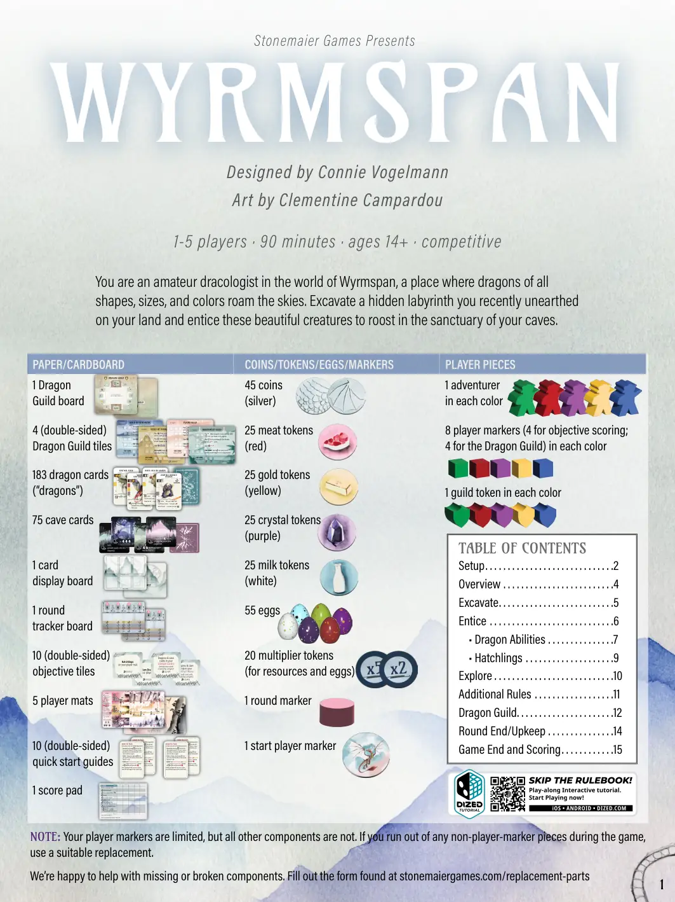
<figcaption>原版规则书 · 第 1 页（点击图片放大）</figcaption>
</figure>

<details class="mt-fold">
<summary>📝 第 1 页 AI 机翻对照（点击展开）</summary>
<div class="mt-body"><h2>巨龙纪元 (WYRMSPAN)</h2>

<p>Stonemaier Games 呈现</p>

<p>设计：Connie Vogelmann</p>

<p>美术：Clementine Campardou</p>

<p>1-5名玩家 · 90分钟 · 14岁以上 · 竞技类</p>

<p>你是一名在巨龙纪元世界中的业余龙类学者，这是一个各种形状、大小和颜色的巨龙在天空中翱翔的地方。挖掘你最近在土地上发现的隐藏迷宫，并引诱这些美丽的生物栖息在你洞穴的庇护所中。</p>

<h2>纸板/卡纸</h2>

<h2>硬币/指示物/蛋/标记物</h2>

<h2>玩家棋子</h2>

<p>1条巨龙</p>

<p>公会版图</p>

<p>45枚硬币</p>

<p>(银色)</p>

<p>每种颜色1名</p>

<p>冒险者</p>

<p>4张(双面)</p>

<p>巨龙公会板块</p>

<p>25个肉食指示物</p>

<p>(红色)</p>

<p>每种颜色8个玩家标记(4个用于目标计分；4个用于巨龙公会)</p>

<p>每种颜色1个公会指示物</p>

<p>183张巨龙卡牌</p>

<p>("巨龙")</p>

<p>25个金币指示物</p>

<p>(黄色)</p>

<p>75张洞穴卡牌</p>

<p>25个水晶指示物</p>

<p>(紫色)</p>

<p>1张</p>

<p>卡牌展示版图</p>

<p>25个牛奶指示物</p>

<p>(白色)</p>

<p>1个</p>

<p>轮次追踪版图</p>

<p>55个蛋</p>

<p>10张(双面)</p>

<p>目标板块</p>

<p>20个乘数指示物</p>

<p>(用于资源和蛋)</p>

<p>5张玩家版图</p>

<p>1个轮次标记</p>

<p>10张(双面)</p>

<p>快速入门指南</p>

<p>1个起始玩家标记</p>

<p>1个记分板</p>

<p>注意：你的玩家标记数量有限，但所有其他组件没有限制。如果在游戏过程中用完了任何非玩家标记的棋子，请使用合适的替代品。</p>

<p>我们很乐意帮助处理缺失或损坏的组件。请填写 stonemaiergames.com/replacement-parts 上的表格。</p>

<h2>目录</h2>

<p>设置. . . . . . . . . . . . . . . . . . . . . . . . . . . . . 2</p>

<p>概述. . . . . . . . . . . . . . . . . . . . . . . . . 4</p>

<p>挖掘. . . . . . . . . . . . . . . . . . . . . . . . . . 5</p>

<p>引诱 . . . . . . . . . . . . . . . . . . . . . . . . . . . . 6</p>

<p>• 巨龙能力 . . . . . . . . . . . . . . . . . . 7</p>

<p>• 幼龙. . . . . . . . . . . . . . . . . . . . . 9</p>

<p>探索. . . . . . . . . . . . . . . . . . . . . . . . . . . 10</p>

<p>附加规则. . . . . . . . . . . . . . . . . . . . . . 11</p>

<p>巨龙公会. . . . . . . . . . . . . . . . . . . . . . 12</p>

<p>轮次结束/维护. . . . . . . . . . . . . . . 14</p>

<p>游戏结束和计分. . . . . . . . . . . . . 15</p>

<h2>巨龙公会</h2>

<h2>轮次追踪器</h2>

<h2>游戏结束</h2>

<h2>计分</h2>

<h2>计分</h2>

<p>激活</p>

<p>然后</p>

<p>激活</p>

<p>然后</p>

<p>激活</p>

<p>然后</p>

<h2>计分</h2>

<h2>计分</h2>

<p>激活</p>

<p>然后</p>

<p>获得</p>

<p>+ 1</p>

<p>获得</p>

<p>+ 1</p>

<p>获得</p>

<p>+ 1</p>

<p>第一名</p>

<h2>放置</h2>

<p>第二名</p>

<h2>放置</h2>

<p>第三名</p>

<h2>放置</h2>

<h2>所有</h2>

<h2>其他</h2>

<h2>卡牌版图</h2>

<h2>巨龙公会</h2>

<h2>开始</h2>

<p>放置未使用的</p>

<p>标记在下方</p>

<p>放置未使用的</p>

<p>标记在上方</p>

<p>在此放置巨龙公会板块，</p>

<p>正面朝上显示正确的玩家数量。</p>

<h2>轮次追踪器</h2>

<h2>游戏结束</h2>

<h2>计分</h2>

<h2>计分</h2>

<p>激活</p>

<p>然后</p>

<p>激活</p>

<p>然后</p>

<p>激活</p>

<p>然后</p>

<h2>计分</h2>

<h2>计分</h2>

<p>激活</p>

<p>然后</p>

<p>获得</p>

<p>+ 1</p>

<p>获得</p>

<p>+ 1</p>

<p>获得</p>

<p>+ 1</p>

<p>第一名</p>

<h2>放置</h2>

<p>第二名</p>

<h2>放置</h2>

<p>第三名</p>

<h2>放置</h2>

<h2>所有</h2>

<h2>其他</h2>

<h2>玩家版图</h2>

<p>在你的回合结束时，将你的冒险者</p>

<p>放回此处。</p>

<p>在你的回合结束时，弃牌至：</p>

<p>9张总卡牌(</p>

<p>和</p>

<p>)</p>

<p>9枚硬币</p>

<p>9个资源</p>

<h2>深红洞穴 (CRIMSON CAVERN)</h2>

<h2>金色洞穴 (GOLDEN GROTTO)</h2>

<h2>紫晶深渊 (AMETHYST ABYSS)</h2>

<p>+</p>

<h2>挖掘</h2>

<p>+</p>

<h2>挖掘</h2>

<p>第一</p>

<p>第二</p>

<p>第三</p>

<p>第一</p>

<p>第二</p>

<p>第三</p>

<p>第一</p>

<p>第二</p>

<p>第三</p>

<h2>挖掘</h2>

<h2>费用</h2>

<p>+ 印在列上</p>

<p>从你的手牌中打出，放入洞穴中最左边的空格。</p>

<h2>诱惑</h2>

<h2>费用</h2>

<p>+ 印在</p>

<p>从你的手牌中打出，放入洞穴中最左边的已挖掘空间。</p>

<h2>探索</h2>

<h2>费用</h2>

<p>印在洞穴入口</p>

<p>选择一个洞穴，将你的冒险者从左向右移动，直到你到达一个</p>

<p>。</p>

<p>获得</p>

<p>获得</p>

<p>获得</p>

<p>获得</p>

<p>获得</p>

<p>获得</p>

<p>放置</p>

<p>放置</p>

<p>放置</p>

<p>从你的供应中缓存最多</p>

<p>到任意龙身上。</p>

<p>从你的手牌中藏起最多2张</p>

<p>到任意龙身下。</p>

<p>从你的手牌中弃置最多</p>

<p>。每弃置一张，放置</p>

<p>。</p>

<p>获得</p>

<p>获得</p>

<p>获得</p>

<p>你可以随时转换：</p>

<p>1x: 3(</p>

<p>/</p>

<p>/</p>

<p>)</p>

<p>1x: 3(</p>

<p>/</p>

<p>/</p>

<p>)</p>

<p>1x: 3(</p>

<p>/</p>

<p>/</p>

<p>)</p>

<h2>基础</h2>

<h2>营地</h2>

<h2>在此储存2个蛋：</h2>

<h2>龙牌</h2>

<h2>洞穴牌</h2>

<h2>海员公会</h2>

<p>用手牌中的</p>

<p>免费挖掘1个空间。</p>

<p>支付</p>

<p>，然后免费从你的手牌中打出</p>

<p>。</p>

<p>获得</p>

<p>。</p>

<p>游戏结束：根据玩家版图上每列填满的龙获得3个</p>

<p>。</p>

<h2>游戏结束：</h2>

<p>获得印制的VP</p>

<p>1（无限制）</p>

<p>4-5人</p>

<h2>顽皮的</h2>

<h2>哨兵飞行者</h2>

<p>支付</p>

<p>以获得</p>

<p>。</p>

<h2>大型</h2>

<h2>害羞的</h2>

<h2>疲惫的</h2>

<h2>鹰头狮身龙</h2>

<p>如果这条龙在这个洞穴中被其他两条龙夹在中间，则获得2。</p>

<h2>大型</h2>

<h2>如何游戏：</h2>

<p>在每个回合，选择以下行动之一：</p>

<p>•  通过将</p>

<p>放入你的3个洞穴中的1个的最左边空格来挖掘，提供即时收益和一个放置龙的空间。</p>

<p>•  通过将</p>

<p>从你的手牌中放入1个洞穴的最左边已挖掘空间来诱惑一条龙。</p>

<p>•  探索你的 Crimson Cavern（深红洞穴）、你的 Golden Grotto（金色洞穴）或你的 Amethyst Abyss（紫水晶深渊）。激活所有</p>

<p>能力，直到你到达</p>

<p>。</p>

<p>在支付行动费用时，将硬币/蛋放在行动本身上。</p>

<h2>如何游戏：</h2>

<p>在每个回合，选择以下行动之一：</p>

<p>•  通过将</p>

<p>放入你的3个洞穴中的1个的最左边空格来挖掘，提供即时收益和一个放置龙的空间。</p>

<p>•  通过将</p>

<p>从你的手牌中放入1个洞穴的最左边已挖掘空间来诱惑一条龙。</p>

<p>•  探索你的 Crimson Cavern（深红洞穴）、你的 Golden Grotto（金色洞穴）或你的 Amethyst Abyss（紫水晶深渊）。激活所有</p>

<p>能力，直到你到达</p>

<p>。</p>

<p>在支付行动费用时，将硬币/蛋放在行动本身上。</p>

<p>支付</p>

<p>，然后用手牌中的</p>

<p>免费挖掘最多2个空间。</p>

<p>支付</p>

<p>，然后免费从你的手牌中打出</p>

<p>到你的玩家版图上的任意龙身上。</p>

<p>获得</p>

<p>。</p>

<p>游戏结束：根据你的玩家版图上的每个</p>

<p>获得1个。（包括被龙覆盖的。）</p>

<h2>游戏结束：</h2>

<p>获得印制的VP</p>

<p>1（无限制）</p>

<p>4-5人</p>

<h2>高地公会</h2>

<p>支付</p>

<p>，然后从牌库中抽1张牌并免费打出。</p>

<p>支付</p>

<p>，然后免费从你的手牌中打出</p>

<p>。</p>

<p>获得</p>

<p>。放置</p>

<p>。</p>

<p>游戏结束：根据你拥有的每个</p>

<p>获得1个。（向下取整。）</p>

<h2>游戏结束：</h2>

<p>获得印制的VP</p>

<p>1（无限制）</p>

<h2>平原公会</h2>

<p>4-5人</p>

<h2>雨林公会</h2>

<p>支付</p>

<p>，然后用手牌或展示区中的</p>

<p>免费挖掘1个空间。</p>

<p>从你的手牌或展示区中打出</p>

<p>。</p>

<p>忽略所有</p>

<p>费用。</p>

<p>获得</p>

<h2>游戏结束：</h2>

<p>获得1个胜利点，对应你1个洞穴中所有龙牌上印制费用的总和。</p>

<p>4-5人游戏</p>

<h2>游戏结束：</h2>

<p>获得印制的胜利点</p>

<p>1（无限制）</p>

<h2>害羞的</h2>

<h2>白腹食草龙</h2>

<p>将</p>

<p>从你的补给库缓存于此。</p>

<p>当第3个</p>

<p>被缓存时，也放置</p>

<p>。</p>

<p>任何时候你在此缓存</p>

<p>，获得</p>

<p>。</p>

<h2>幼龙</h2>

<h2>攻击性的</h2>

<h2>有角的吸血</h2>

<h2>龙</h2>

<p>将</p>

<p>从你的补给库缓存于此。</p>

<h2>幼龙</h2>

<p>任何时候你在此缓存</p>

<p>，获得</p>

<p>。</p>

<p>当第3个</p>

<p>被缓存时，也获得</p>

<p>。</p>

<h2>如何游戏：</h2>

<p>在每个回合，执行以下1个行动：</p>

<p>•  通过将</p>

<p>played into the left-most empty space in 1 of your 3 caves,</p>

<p>提供即时收益和容纳龙的位置。</p>

<p>•  引诱一条龙，通过将</p>

<p>从你的手牌放入1个洞穴中最左边的已挖掘空间。</p>

<p>•  探索你的 Crimson Cavern（深红洞穴）、你的 Golden Grotto（金色洞穴）或你的 Amethyst Abyss（紫晶深渊）。激活所有</p>

<p>能力直到你达到</p>

<p>。</p>

<p>支付行动费用时，将硬币/蛋放在行动本身上。</p>

<h2>如何游戏：</h2>

<p>在每个回合，执行以下1个行动：</p>

<p>•  通过将</p>

<p>played into the left-most empty space in 1 of your 3 caves,</p>

<p>提供即时收益和容纳龙的位置。</p>

<p>•  引诱一条龙，通过将</p>

<p>从你的手牌放入1个洞穴中最左边的已挖掘空间。</p>

<p>•  探索你的 Crimson Cavern（深红洞穴）、你的 Golden Grotto（金色洞穴）或你的 Amethyst Abyss（紫晶深渊）。激活所有</p>

<p>能力直到你达到</p>

<p>。</p>

<p>支付行动费用时，将硬币/蛋放在行动本身上。</p>

<p>将</p>

<p>从</p>

<p>公共补给库缓存到任何龙牌上。</p>

<p>你玩家版图上的中型龙</p>

<p>0/1/2/3</p>

<p>你玩家版图上的幼龙</p>

<p>0/0/1/2</p>

<p>放置</p>

<p>。</p>

<p>最多3次，支付</p>

<p>来放置</p>

<p>。每位对手可以执行此行动1次。</p>

<p>激活你</p>

<p>玩家版图上任何龙的能力</p>

<p>你</p>

<p>紫晶深渊中的龙和洞穴牌</p>

<p>（包括被龙覆盖的洞穴牌）</p>

<p>1/2/4/5</p>

<p>你</p>

<p>深红洞穴中的龙和洞穴牌</p>

<p>（包括被龙覆盖的洞穴牌）</p>

<p>1/2/4/5</p>

<h2>计分</h2>

<p>龙行会上的标记</p>

<p>来自游戏结束能力的龙牌上印制的（       ）</p>

<p>每个蛋*1分</p>

<p>每个缓存资源*1分</p>

<p>每个收纳卡*1分</p>

<p>来自公共目标</p>

<p>（平局为友好平局—见规则书第15页）</p>

<p>剩余的硬币和物品</p>

<p>•  每个硬币1分</p>

<p>•  每4个</p>

<p>/</p>

<p>/</p>

<p>（任意组合）向下取整</p>

<p>总计：</p>

<p>姓名：</p>

<p>最终平局决胜：玩家版图上最多的龙</p>

<p>*除非另有说明</p></div>
</details>

<figure>
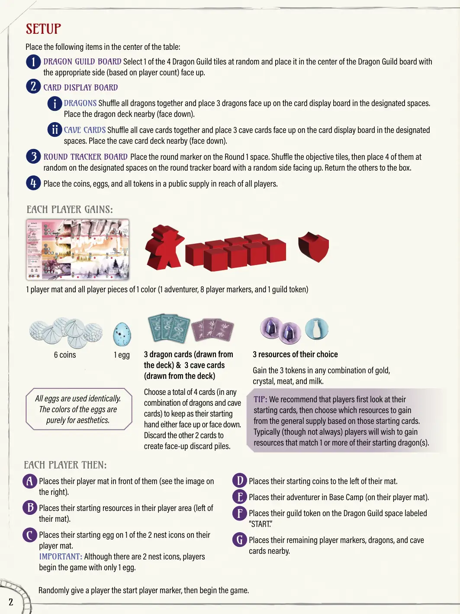
<figcaption>原版规则书 · 第 2 页（点击图片放大）</figcaption>
</figure>

<details class="mt-fold">
<summary>📝 第 2 页 AI 机翻对照（点击展开）</summary>
<div class="mt-body"><h2>设置</h2>

<p>将以下物品放在桌子中央：</p>

<p>龙行会版图 随机选择4个龙行会板块中的1个，将其放在龙行会版图中央，根据玩家数量将相应的一面朝上。</p>

<h2>卡牌展示版图</h2>

<p>龙 将所有龙牌洗混，在卡牌展示版图的指定空间上正面朝上放置3张龙牌。将龙牌库放在附近（正面朝下）。</p>

<p>洞穴卡 将所有洞穴卡洗混，在卡牌展示版图的指定空间上正面朝上放置3张洞穴卡。将洞穴卡库放在附近（正面朝下）。</p>

<p>轮次追踪版图 将轮次标记放在第1轮的空间上。将目标板块洗混，然后随机选择4个，正面朝上随机放置在轮次追踪版图的指定空间上。将剩余的放回盒中。</p>

<p>将金币、龙蛋和所有指示物放在所有玩家都能拿到的公共供应区中。</p>

<h2>每位玩家获得：</h2>

<h2>然后每位玩家：</h2>

<p>将他们的玩家垫放在自己面前（见右侧图片）。</p>

<p>将他们的起始资源放在他们的玩家区域（垫子左侧）。</p>

<p>将他们的起始龙蛋放在他们玩家垫上的2个巢穴图标中的任意1个上。</p>

<p>重要提示：虽然有2个巢穴图标，但玩家开始游戏时只有1个龙蛋。</p>

<p>将他们的起始金币放在垫子左侧。</p>

<p>将他们的冒险者放在基地营地（在他们玩家垫上）。</p>

<p>将他们的行会指示物放在标记为"START"的龙行会空间上。</p>

<p>将他们剩余的玩家标记、龙牌和洞穴卡放在附近。</p>

<p>3张他们选择的资源</p>

<p>以任意组合获得3个金币、水晶、肉类或牛奶指示物。</p>

<p>在你的回合结束时，将冒险者</p>

<p>返回到这里。</p>

<p>在你的回合结束时，弃牌至：</p>

<p>总共9张卡牌（</p>

<p>和</p>

<p>）</p>

<p>9枚金币</p>

<p>9个资源</p>

<h2>深红洞穴</h2>

<h2>金色洞穴</h2>

<h2>紫水晶深渊</h2>

<p>+</p>

<h2>挖掘</h2>

<p>+</p>

<h2>挖掘</h2>

<p>1st</p>

<p>2nd</p>

<p>3rd</p>

<p>1st</p>

<p>2nd</p>

<p>3rd</p>

<p>1st</p>

<p>2nd</p>

<p>3rd</p>

<h2>挖掘</h2>

<h2>费用</h2>

<p>+ 印在列上</p>

<p>从你的手牌中打出一张</p>

<p>，放入洞穴中最左边的空位。</p>

<h2>诱捕</h2>

<h2>费用</h2>

<p>+ 印在</p>

<p>上</p>

<p>从你的手牌中打出一张</p>

<p>，放入洞穴中最左边的已挖掘空间。</p>

<h2>探索</h2>

<h2>费用</h2>

<p>印在洞穴入口上</p>

<p>选择一个洞穴，将你的冒险者从左向右移动，直到到达一个</p>

<p>。</p>

<p>获得</p>

<p>获得</p>

<p>获得</p>

<p>获得</p>

<p>获得</p>

<p>获得</p>

<p>放置</p>

<p>放置</p>

<p>放置</p>

<p>从你的供应区中最多缓存</p>

<p>到任意龙牌上。</p>

<p>从你的手牌中最多藏起2张</p>

<p>到任意龙牌下。</p>

<p>从你的手牌中最多弃掉</p>

<p>。每弃掉一张放置</p>

<p>。</p>

<p>获得</p>

<p>获得</p>

<p>获得</p>

<p>你可以随时转换：</p>

<p>1x: 3(</p>

<p>/</p>

<p>/</p>

<p>)</p>

<p>1x: 3(</p>

<p>/</p>

<p>/</p>

<p>)</p>

<p>1x: 3(</p>

<p>/</p>

<p>/</p>

<p>)</p>

<h2>基地</h2>

<h2>营地</h2>

<h2>在此储存2个龙蛋：</h2>

<p>6枚金币</p>

<p>1个龙蛋</p>

<p>i</p>

<p>ii</p>

<p>3张龙牌（从牌库中抽取）和 3张洞穴卡（从牌库中抽取）</p>

<p>总共选择4张卡牌（龙牌和洞穴卡的任意组合）作为起始手牌，可以正面朝上或正面朝下放置。</p>

<p>将另外2张卡牌弃掉。</p>

<p>创建正面朝上的弃牌堆。</p>

<p>1个玩家版图和1种颜色的所有玩家棋子（1个冒险者，8个玩家标记和1个公会指示物）</p>

<p>提示：我们建议玩家先查看他们的起始卡牌，然后根据这些起始卡牌选择从公共资源库中获得哪些资源。</p>

<p>通常（但不总是）玩家会希望获得与他们起始的1个或多个龙相匹配的资源。</p>

<p>A</p>

<p>B</p>

<p>C</p>

<p>D</p>

<p>E</p>

<p>F</p>

<p>G</p>

<p>所有蛋的使用方式完全相同。</p>

<p>蛋的颜色纯粹是为了美观。</p>

<p>随机将起始玩家标记交给一名玩家，然后开始游戏。</p></div>
</details>

<figure>
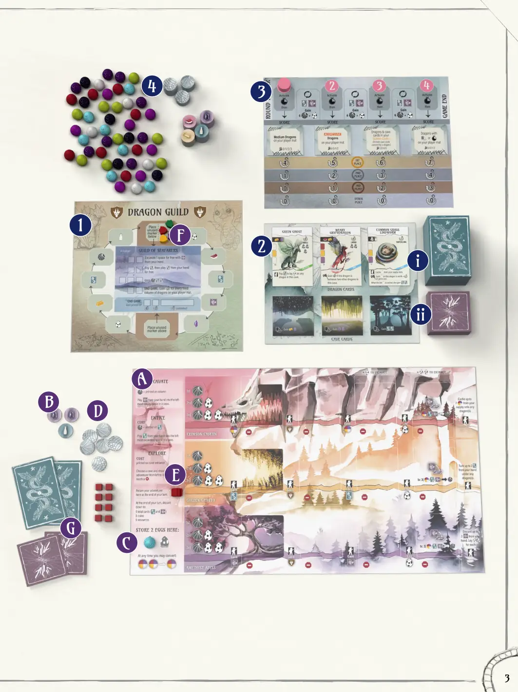
<figcaption>原版规则书 · 第 3 页（点击图片放大）</figcaption>
</figure>

<details class="mt-fold">
<summary>📝 第 3 页 AI 机翻对照（点击展开）</summary>
<div class="mt-body"><p>i</p>

<p>ii</p>

<p>A</p>

<p>B</p>

<p>C</p>

<p>D</p>

<p>E</p>

<p>F</p>

<p>G</p></div>
</details>

<figure>
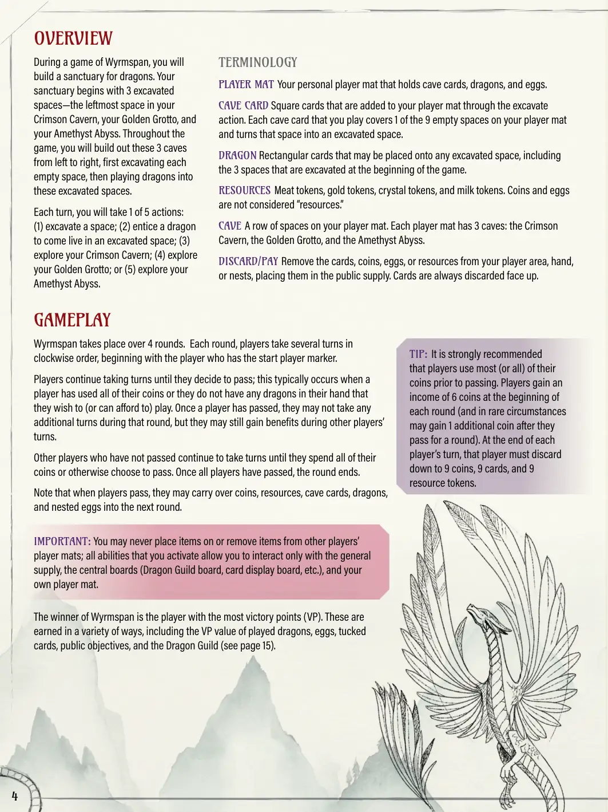
<figcaption>原版规则书 · 第 4 页（点击图片放大）</figcaption>
</figure>

<details class="mt-fold">
<summary>📝 第 4 页 AI 机翻对照（点击展开）</summary>
<div class="mt-body"><h2>概览</h2>

<p>在《翼龙纪》(Wyrmspan) 游戏中，你将</p>

<p>为龙族建造一个圣所。你的圣所始于</p>

<p>3个已挖掘的区域——你的 Crimson Cavern（绯红洞穴）的最左侧区域、</p>

<p>你的 Golden Grotto（金色洞穴）和你的 Amethyst Abyss（紫晶深渊）。</p>

<p>在整个游戏过程中，你将从左到右扩建这3个洞穴，首先挖掘每个空区域，</p>

<p>然后将龙放入这些已挖掘的区域中。</p>

<p>每个回合，你将执行以下5个行动中的1个：(1) 挖掘一个区域；(2) 诱使一条龙</p>

<p>来居住在已挖掘的区域中；(3) 探索你的 Crimson Cavern；(4) 探索你的</p>

<p>Golden Grotto；或 (5) 探索你的 Amethyst Abyss。</p>

<h2>游戏流程</h2>

<p>《翼龙纪》游戏共进行4轮。每轮中，玩家按顺时针顺序进行多个回合，</p>

<p>从持有起始玩家标记的玩家开始。</p>

<p>玩家继续进行回合，直到他们决定跳过；这通常发生在玩家用完所有金币，</p>

<p>或者他们手中没有任何想要（或能够负担得起）打出的龙时。一旦玩家跳过，</p>

<p>他们在该轮中不能再进行任何额外回合，但在其他玩家的回合中他们仍然可以获得收益。</p>

<p>尚未跳过的其他玩家继续进行回合，直到他们用完所有金币或选择跳过。一旦所有玩家都跳过，</p>

<p>该轮结束。</p>

<p>注意，当玩家跳过时，他们可以将金币、资源、洞穴卡牌、龙和嵌套蛋带入下一轮。</p>

<h2>术语</h2>

<p>玩家垫 (PLAYER MAT) 你的个人玩家垫，用于放置洞穴卡牌、龙和蛋。</p>

<p>洞穴卡 (CAVE CARD) 通过挖掘行动添加到你的玩家垫上的方形卡牌。你每打一张洞穴卡牌会覆盖你玩家垫上9个空区域中的1个，并将该区域变成已挖掘区域。</p>

<p>龙 (DRAGON) 可以放置在任何已挖掘区域上的矩形卡牌，包括游戏开始时已挖掘的3个区域。</p>

<p>资源 (RESOURCES) 肉指示物、金币指示物、水晶指示物和奶指示物。金币和蛋不被视为"资源"。</p>

<p>洞穴 (CAVE) 你玩家垫上的一排区域。每个玩家垫有3个洞穴：Crimson Cavern（绯红洞穴）、Golden Grotto（金色洞穴）和Amethyst Abyss（紫晶深渊）。</p>

<p>弃牌/支付 (DISCARD/PAY) 将卡牌、金币、蛋或资源从你的玩家区域、手牌或巢中移除，放入公共供应区。卡牌总是正面朝上弃置。</p>

<p>重要：你绝不能将物品放置在其他玩家的玩家垫上，也不能从其他玩家的玩家垫上移除物品；你激活的所有能力只允许你与公共供应区、中央版图（龙行会版图、卡牌展示版图等）以及你自己的玩家垫进行互动。</p>

<p>《翼龙纪》的获胜者是拥有最多胜利点(VP)的玩家。这些胜利点通过多种方式获得，包括已打出的龙、蛋、嵌套卡牌、公共目标和龙行会（见第15页）的价值。</p>

<p>提示：强烈建议玩家在传递前使用大部分（或全部）他们的金币。玩家在每轮开始时获得6个金币收入（在极少数情况下，他们在传递一轮后可能额外获得1个金币）。在每个玩家回合结束时，该玩家必须弃牌至不超过9个金币、9张卡牌和9个资源指示物。</p></div>
</details>

<figure>
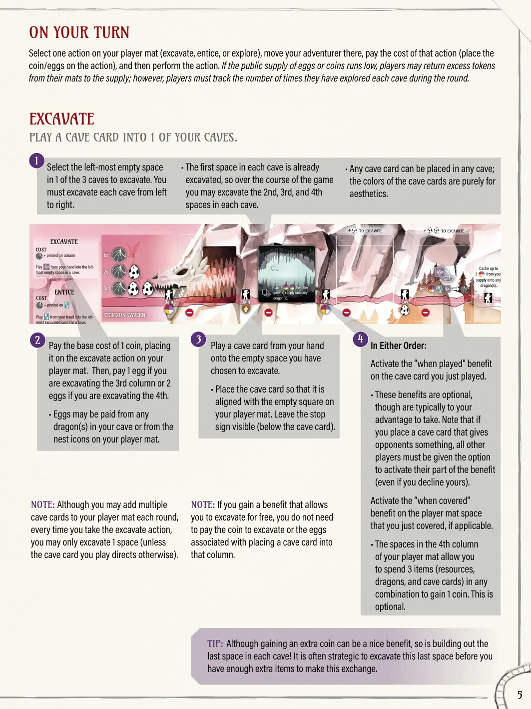
<figcaption>原版规则书 · 第 5 页（点击图片放大）</figcaption>
</figure>

<details class="mt-fold">
<summary>📝 第 5 页 AI 机翻对照（点击展开）</summary>
<div class="mt-body"><h2>深红洞穴</h2>

<p>+</p>

<h2>挖掘</h2>

<p>+</p>

<h2>挖掘</h2>

<p>1st</p>

<p>2nd</p>

<p>3rd</p>

<h2>挖掘</h2>

<h2>费用</h2>

<p>+ 印刷在列上</p>

<p>从你的手牌中打出，放入洞穴中最左边的空格。</p>

<h2>诱捕</h2>

<h2>费用</h2>

<p>+ 印刷在</p>

<p>从你的手牌中打出，放入洞穴中最左边已挖掘的空格。</p>

<p>获得</p>

<p>获得</p>

<p>放置</p>

<p>缓存最多</p>

<p>从你的</p>

<p>补给库中到任意</p>

<p>龙身上。</p>

<p>获得</p>

<p>1x: 3(</p>

<p>/</p>

<p>/</p>

<p>)</p>

<h2>在你的回合</h2>

<p>选择你玩家版图上的一个行动（挖掘、诱捕或探索），将你的冒险者移动到那里，支付该行动的费用（将硬币/蛋放在行动上），然后执行该行动。如果公共蛋或硬币补给不足，玩家可以将他们版图上多余的指示物返还给补给库；但是，玩家必须记录他们在每轮中探索每个洞穴的次数。</p>

<p>提示：虽然获得额外硬币可能是个不错的收益，但填满每个洞穴的最后一个空间也很重要！通常的策略是在你有足够的额外物品来进行交换之前，先挖掘这个最后一个空间。</p>

<p>• 每个洞穴的第一个空间已经挖掘，因此在游戏过程中你可以挖掘每个洞穴的第2、第3和第4个空间。</p>

<p>• 任何洞穴卡牌都可以放置在任何洞穴中；洞穴卡牌的颜色纯粹是为了美观。</p>

<p>从你的手牌中打出一张洞穴卡牌到你选择挖掘的空格上。</p>

<p>• 放置洞穴卡牌，使其与玩家版图上的空方格对齐。保持停止标志可见（在洞穴卡牌下方）。</p>

<p>选择3个洞穴中的1个，挖掘其最左边的空格。你必须从左到右挖掘每个洞穴。</p>

<p>支付基础费用1枚硬币，将其放在你玩家版图上的挖掘行动上。然后，如果你挖掘第3列，支付1个蛋；如果你挖掘第4列，支付2个蛋。</p>

<p>• 蛋可以从你洞穴中的任何龙身上或玩家版图上的巢穴图标中支付。</p>

<p>从</p>

<p>公共补给库中缓存最多</p>

<p>到任意</p>

<p>龙身上。</p>

<p>注意：虽然你每轮可以在玩家版图上添加多张洞穴卡牌，但每次执行挖掘行动时，你只能挖掘1个空间（除非你打出的洞穴卡牌另有说明）。</p>

<h2>挖掘</h2>

<p>将一张洞穴卡牌放入你的1个洞穴中。</p>

<p>按任意顺序：</p>

<p>激活你刚刚打出的洞穴卡牌上的"打出时"效果。</p>

<p>• 这些效果是可选的，但通常对你有利。请注意，如果你放置一张给予对手某物的洞穴卡牌，所有其他玩家必须被给予激活他们那部分效果的机会（即使你放弃你的部分）。</p>

<p>激活你刚刚覆盖的玩家版图空间上的"被覆盖时"效果（如果适用）。</p>

<p>• 你玩家版图第4列的空间允许你以任意组合花费3个物品（资源、龙和洞穴卡牌）来获得1枚硬币。这是可选的。</p>

<p>注意：如果你获得一个允许</p>

<p>你可以免费进行挖掘，你不需要支付挖掘所需的硬币，也不需要支付将洞穴卡牌放置到该列所关联的蛋。</p></div>
</details>

<figure>
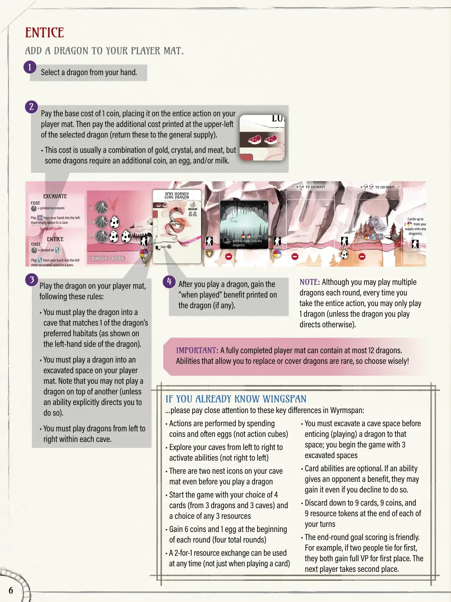
<figcaption>原版规则书 · 第 6 页（点击图片放大）</figcaption>
</figure>

<details class="mt-fold">
<summary>📝 第 6 页 AI 机翻对照（点击展开）</summary>
<div class="mt-body"><h2>诱惑</h2>

<p>在你的玩家版图上添加一条龙。</p>

<h2>深红洞穴</h2>

<p>+</p>

<h2>挖掘</h2>

<p>+</p>

<h2>挖掘</h2>

<p>1st</p>

<p>2nd</p>

<p>3rd</p>

<h2>挖掘</h2>

<h2>费用</h2>

<p>+ 印在列上</p>

<p>从你的手牌中打出，放入洞穴中最左边的空格。</p>

<h2>诱惑</h2>

<h2>费用</h2>

<p>+ 印在</p>

<p>从你的手牌中打出，放入洞穴中最左边的已挖掘空间。</p>

<p>获得</p>

<p>获得</p>

<p>放置</p>

<p>从你的</p>

<p>补给库中最多</p>

<p>放置到任意</p>

<p>龙身上。</p>

<p>获得</p>

<p>1x: 3(</p>

<p>/</p>

<p>/</p>

<p>)</p>

<p>从</p>

<p>通用补给库中</p>

<p>放置到任意</p>

<p>龙身上。</p>

<h2>顽皮的</h2>

<h2>长角的</h2>

<h2>肺龙</h2>

<p>获得</p>

<p>。</p>

<h2>中型</h2>

<p>从你的手牌中选择一条龙。</p>

<p>支付基础费用1枚金币，将其放置在你的玩家版图的诱惑行动上。然后支付所选龙左上角印制的额外费用（这些费用返还给通用补给库）。</p>

<p>• 此费用通常是金币、水晶和肉的组合，但有些龙需要额外金币、蛋和/或牛奶。</p>

<p>按照以下规则在你的玩家版图上打出龙：</p>

<p>• 你必须将龙打入与其一种偏好栖息地相匹配的洞穴中（如龙的左侧所示）。</p>

<p>• 你必须将龙打入玩家版图上的已挖掘空间。注意，你不能将龙打在另一条龙之上（除非能力明确指示你这样做）。</p>

<p>• 你必须从左到右在每个洞穴内打出龙。</p>

<p>4 打出龙后，获得印在龙上的"打出时"收益（如果有）。</p>

<p>注意：尽管你每轮可以打出多条龙，但每次你执行诱惑行动时，只能打出1条龙（除非你打出的龙另有指示）。</p>

<p>重要：一个完全完成的玩家版图最多可容纳12条龙。允许你替换或覆盖龙的能力很少，所以要明智选择！</p>

<h2>龙</h2>

<h2>如果你已经了解《翼展》</h2>

<p>...请特别注意 Wyrmspan 中的以下关键差异：</p>

<p>• 行动通过花费金币和通常的蛋（而非行动立方体）来执行</p>

<p>• 从左到右探索你的洞穴以激活能力（而非从右到左）</p>

<p>• 即使在你打出龙之前，你的洞穴版图上也有两个巢穴图标</p>

<p>• 游戏开始时，你可以从3条龙和3个洞穴中选择4张卡牌，并选择任意3种资源</p>

<p>• 每轮开始时获得6枚金币和1个蛋（共四轮）</p>

<p>• 2换1的资源交换可以在任何时候使用（不仅限于打出卡牌时）</p>

<p>• 你必须先挖掘一个洞穴空间，才能将龙诱惑（打出）到该空间；游戏开始时你有3个已挖掘空间</p>

<p>• 卡牌能力是可选的。如果一个能力给对手带来收益，即使你选择不执行，他们也可以获得该收益。</p>

<p>• 在你的每个回合结束时，将手牌、金币和资源指示物弃置至9张、9枚和9个</p>

<p>• 轮末目标得分是友好的。例如，如果两人并列第一，</p>

<p>他们都获得第一名的全部VP。下一位玩家获得第二名。</p></div>
</details>

<figure>
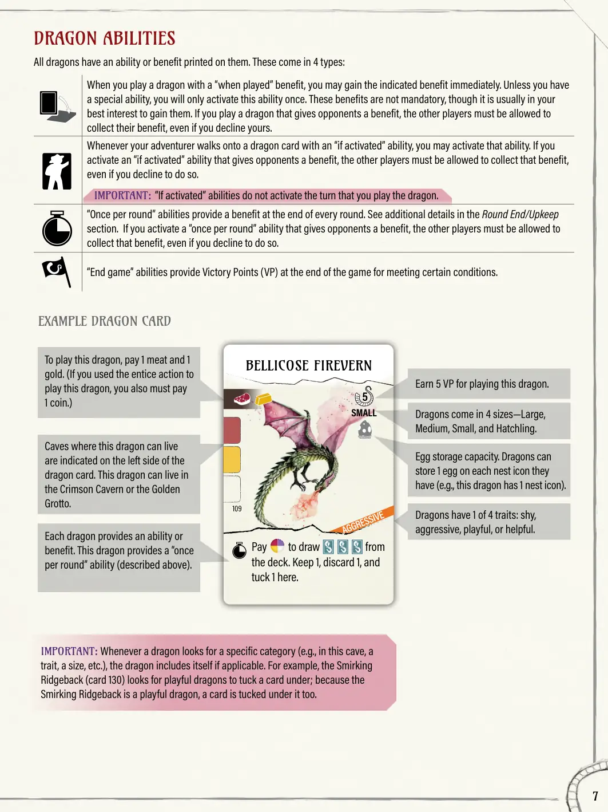
<figcaption>原版规则书 · 第 7 页（点击图片放大）</figcaption>
</figure>

<details class="mt-fold">
<summary>📝 第 7 页 AI 机翻对照（点击展开）</summary>
<div class="mt-body"><h2>龙能力</h2>

<p>所有龙牌上都印有能力或收益。这些能力分为4种类型：</p>

<p>重要提示：每当龙寻找特定类别（例如，在这个洞穴中，一个特性，一个尺寸等）时，如果适用，龙会包括自身。例如，狡猾的山脊龙（卡牌130）寻找顽皮的龙来将一张牌塞到下面；因为狡猾的山脊龙是一张顽皮的龙牌，一张牌也被塞到了它下面。</p>

<p>当你打出一张带有"打出时"收益的龙牌时，你可以立即获得所指示的收益。除非你有特殊能力，否则你只会激活此能力一次。这些收益不是强制性的，但通常获得它们对你最有利。如果你打出一张会给对手带来收益的龙牌，即使你放弃自己的收益，也必须允许其他玩家获得他们的收益。</p>

<p>每当你的冒险者走到一张带有"如果激活"能力的龙牌上时，你可以激活该能力。如果你激活了一个会给对手带来收益的"如果激活"能力，即使你选择不这样做，也必须允许其他玩家获得该收益。</p>

<p>重要提示："如果激活"能力在你打出龙牌的那个回合不会激活。</p>

<p>"每轮一次"能力在每轮结束时提供收益。在轮次结束/维护部分查看更多细节。如果你激活了一个会给对手带来收益的"每轮一次"能力，即使你选择不这样做，也必须允许其他玩家获得该收益。</p>

<p>"游戏结束"能力在游戏结束时，根据特定条件提供胜利点数（VP）。</p>

<h2>侵略性</h2>

<h2>好战火蜥蜴</h2>

<h2>小型</h2>

<p>支付</p>

<p>从牌库摸</p>

<p>牌。保留1张，弃置1张，并将</p>

<p>1张塞到这里。</p>

<h2>示例龙牌</h2>

<p>要打出这张龙牌，支付1肉和1</p>

<p>金币。（如果你使用引诱行动打出这张龙牌，你还必须支付</p>

<p>1枚硬币。）</p>

<p>打出这张龙牌获得5 VP。</p>

<p>龙有4种尺寸——大型、中型、小型和幼龙。</p>

<p>龙有4种特性之一：害羞、侵略性、顽皮或友善。</p>

<p>蛋储存容量。龙可以在每个巢穴图标上储存1个蛋（例如，这张龙牌有1个巢穴图标）。</p>

<p>每张龙牌提供一种能力或收益。这张龙牌提供"每轮一次"能力（如上所述）。</p>

<p>这张龙牌可以居住的洞穴显示在龙牌的左侧。这张龙牌可以居住在深红洞穴或黄金洞穴。</p></div>
</details>

<figure>
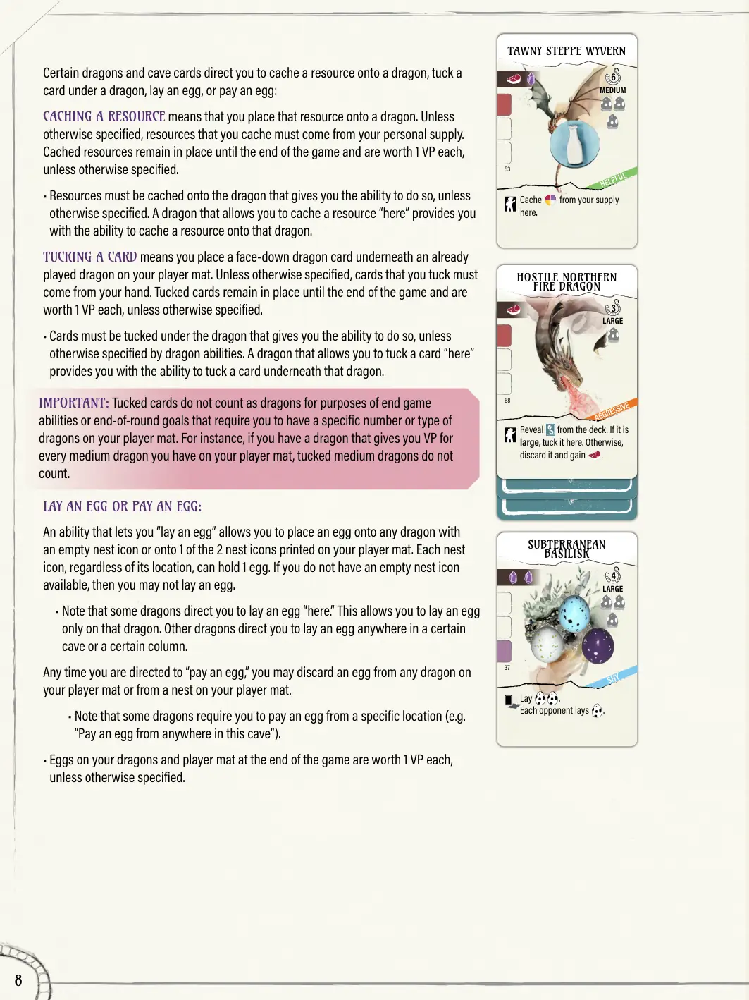
<figcaption>原版规则书 · 第 8 页（点击图片放大）</figcaption>
</figure>

<details class="mt-fold">
<summary>📝 第 8 页 AI 机翻对照（点击展开）</summary>
<div class="mt-body"><p>重要提示：藏起的卡牌不计算为龙，用于游戏结束能力或轮次结束目标，这些能力或目标要求你在玩家版图上拥有特定数量或类型的龙。例如，如果你的龙能让你为玩家版图上的每只中型龙获得VP，那么藏起的中型龙不计入。</p>

<h2>有用的</h2>

<h2>茶色草原翼龙</h2>

<p>从你的资源库中</p>

<p>缓存于此。</p>

<h2>中型</h2>

<h2>害羞的</h2>

<h2>地下的</h2>

<h2>美杜莎</h2>

<p>放置</p>

<p>。</p>

<p>每位对手放置</p>

<p>。</p>

<h2>大型</h2>

<h2>侵略性的</h2>

<h2>敌对的北方</h2>

<h2>火龙</h2>

<p>从牌库中揭示</p>

<p>。如果是大型龙，将其藏起于此。否则，</p>

<p>弃掉它并获得</p>

<p>。</p>

<h2>大型</h2>

<p>某些龙和洞穴卡牌指示你将资源缓存到龙身上、将卡牌藏到龙下面、下蛋或支付蛋：</p>

<p>缓存资源是指将资源放置到龙身上。除非另有说明，否则你缓存的资源必须来自你的个人资源库。缓存的资源保持原位直到游戏结束，每张价值1VP，除非另有说明。</p>

<p>• 资源必须缓存到赋予你此能力的龙身上，除非另有说明。允许你"在此处"缓存资源的龙为你提供了将资源缓存到该龙身上的能力。</p>

<p>藏起卡牌是指将一张面朝下的龙卡牌放置到你玩家版图上已打出的龙下面。除非另有说明，否则你藏起的卡牌必须来自你的手牌。藏起的卡牌保持原位直到游戏结束，每张价值1VP，除非另有说明。</p>

<p>• 卡牌必须藏到赋予你此能力的龙下面，除非龙能力另有说明。允许你"在此处"藏起卡牌的龙为你提供了将卡牌藏到该龙下面的能力。</p>

<h2>下蛋或支付蛋：</h2>

<p>允许你"下蛋"的能力使你可以将蛋放置到任何带有空巢图标的龙身上，或者放置到你玩家版图上打印的2个巢图标中的1个上。每个巢图标，无论其位置如何，都可以容纳1个蛋。如果你没有可用的空巢图标，那么你不能下蛋。</p>

<p>• 注意，某些龙指示你"在此处"下蛋。这使你只能在该龙身上下蛋。其他龙指示你在特定洞穴或特定列的任何位置下蛋。</p>

<p>当你被指示"支付蛋"时，你可以从你玩家版图上的任何龙身上或从你玩家版图上的巢中弃掉一个蛋。</p>

<p>• 注意，某些龙要求你从特定位置支付蛋（例如，"从此洞穴的任何位置支付蛋"）。</p>

<p>• 游戏结束时，你龙身上和玩家版图上的蛋每个价值1VP，除非另有说明。</p></div>
</details>

<figure>
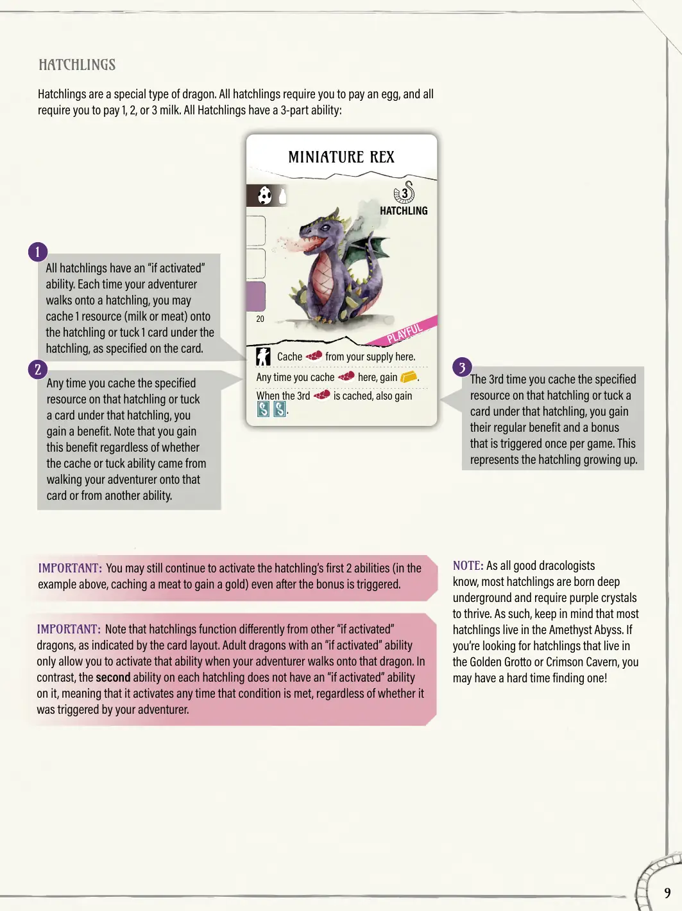
<figcaption>原版规则书 · 第 9 页（点击图片放大）</figcaption>
</figure>

<details class="mt-fold">
<summary>📝 第 9 页 AI 机翻对照（点击展开）</summary>
<div class="mt-body"><h2>嬉戏</h2>

<h2>迷你暴君</h2>

<p>从这里将资源存入你的资源库。</p>

<h2>幼龙</h2>

<p>任何时候当你将资源存入这里，获得1金币。</p>

<p>当第3个资源被存入时，额外获得1金币。</p>

<p>所有幼龙都有一个"如果激活"的能力。每次你的冒险者走到一张幼龙上时，你可以根据卡牌说明，将1个资源（牛奶或肉）存入该幼龙，或将1张牌塞入该幼龙下方。</p>

<p>任何时候当你将指定资源存入该幼龙或将一张牌塞入该幼龙下方时，你会获得一个收益。请注意，无论这个存入或塞入的能力是来自你的冒险者走到这张卡上，还是来自其他能力，你都会获得这个收益。</p>

<p>当你第3次将指定资源存入该幼龙或将一张牌塞入该幼龙下方时，你会获得它们的常规收益和一个每游戏触发一次的奖励。这代表幼龙已经长大。</p>

<h2>幼龙</h2>

<p>幼龙是一种特殊类型的龙。所有幼龙都需要你支付一个蛋，并且都需要你支付1、2或3牛奶。所有幼龙都有一个三部分的能力：</p>

<p>重要提示：即使奖励被触发后，你仍然可以继续激活幼龙的前两个能力（在上面的例子中，存入肉以获得金币）。</p>

<p>重要提示：请注意，幼龙的功能与其他"如果激活"的龙不同，如卡牌布局所示。带有"如果激活"能力的成年龙只允许你的冒险者走到该龙上时激活该能力。相比之下，每张幼龙上的第二个能力没有"如果激活"能力，这意味着它会在满足条件时随时激活，无论它是否由你的冒险者触发。</p>

<p>注意：正如所有优秀的龙类学家所知，大多数幼龙出生在地下深处，需要紫水晶才能茁壮成长。因此，请记住大多数幼龙生活在紫晶深渊。如果你正在寻找生活在金色洞穴或深红洞穴中的幼龙，你可能会很难找到一只！</p></div>
</details>

<figure>
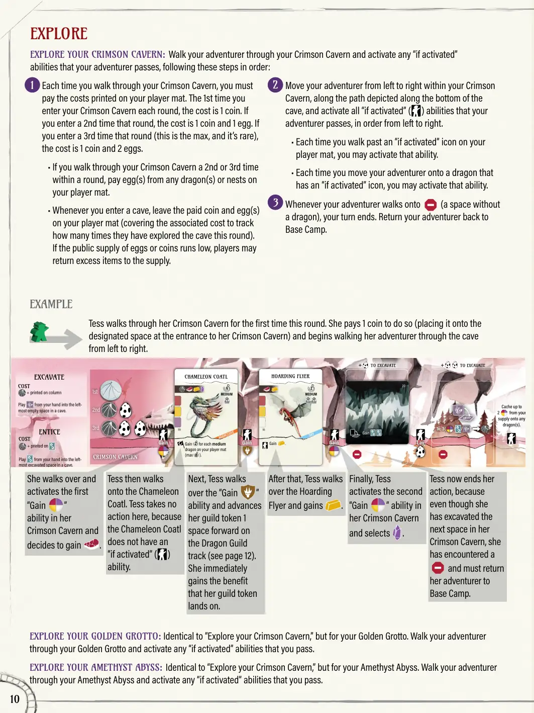
<figcaption>原版规则书 · 第 10 页（点击图片放大）</figcaption>
</figure>

<details class="mt-fold">
<summary>📝 第 10 页 AI 机翻对照（点击展开）</summary>
<div class="mt-body"><h2>深红洞穴</h2>

<p>+</p>

<h2>挖掘</h2>

<p>+</p>

<h2>挖掘</h2>

<p>第一次</p>

<p>第二次</p>

<p>第三次</p>

<h2>挖掘</h2>

<h2>费用</h2>

<p>+ 印刷在列上</p>

<p>从你的手牌中打出，放入洞穴中最左边的空格。</p>

<h2>诱捕</h2>

<h2>费用</h2>

<p>+ 印刷在</p>

<p>从你的手牌中打出，放入洞穴中最左边的已挖掘空格。</p>

<p>获得</p>

<p>获得</p>

<p>放置</p>

<p>从你的</p>

<p>供应区中最多</p>

<p>个到任意</p>

<p>龙身上。</p>

<p>获得</p>

<p>1x: 3(</p>

<p>/</p>

<p>/</p>

<p>)</p>

<p>获得</p>

<p>。</p>

<p>探索你的深红洞穴：带领你的冒险者穿越你的深红洞穴，并激活你的冒险者经过的任何"如果激活"能力，按以下顺序执行步骤：</p>

<p>每次你穿越深红洞穴时，你必须支付你玩家垫上印制的费用。每轮第一次进入深红洞穴时，费用是1枚金币。如果该轮第二次进入，费用是1枚金币和1枚蛋。如果该轮第三次进入（这是上限，且很少见），费用是1枚金币和2枚蛋。</p>

<p>• 如果你在一轮内第二次或第三次穿越深红洞穴，从你玩家垫上的任意龙或巢穴中支付蛋。</p>

<p>• 每次你进入洞穴时，将支付的金币和蛋留在你的玩家垫上（覆盖相应的成本以追踪他们本回合探索洞穴的次数）。</p>

<p>如果公共供应区的蛋或金币不足，玩家可以将多余的物品返还到供应区。</p>

<p>在你的深红洞穴内从左到右移动你的冒险者，沿着洞穴底部描绘的路径，并激活你的冒险者经过的所有"如果激活"(</p>

<p>)能力，从左到右依次激活。</p>

<p>• 每次你经过玩家垫上的"如果激活"图标时，你可以激活该能力。</p>

<p>• 每次你将冒险者移动到带有"如果激活"图标的龙上时，你可以激活该能力。</p>

<p>无论何时你的冒险者走到</p>

<p>（一个没有龙的格子），你的回合结束。将你的冒险者返回到营地。</p>

<h2>探索</h2>

<h2>侵略性</h2>

<h2>变色龙羽蛇</h2>

<h2>中型</h2>

<p>为你的玩家垫上的每只中型龙获得2</p>

<p>（最多8）。</p>

<h2>害羞</h2>

<h2>囤积飞行者</h2>

<p>获得</p>

<p>。</p>

<h2>中型</h2>

<h2>示例</h2>

<p>特丝本回合第一次穿越她的深红洞穴。她为此支付1枚金币（将其放置在她的深红洞穴入口的指定位置），并开始从左到右带领她的冒险者穿越洞穴。</p>

<p>探索你的金色洞穴：与"探索你的深红洞穴"相同，但针对你的金色洞穴。带领你的冒险者穿越你的金色洞穴，并激活你经过的任何"如果激活"能力。</p>

<p>探索你的紫晶深渊：与"探索你的深红洞穴"相同，但针对你的紫晶深渊。带领你的冒险者穿越你的紫晶深渊，并激活你经过的任何"如果激活"能力。</p>

<p>她走过并激活了她的</p>

<p>深红洞穴中的第一个</p>

<p>"获得</p>

<p>"</p>

<p>能力，并决定获得</p>

<p>。</p>

<p>特丝然后走过</p>

<p>变色神兽科阿特尔（Chameleon Coatl）。泰丝（Tess）在此不采取任何行动，因为变色神兽科阿特尔没有"如果激活"（if activated）能力。</p>

<p>接下来，泰丝走过"获得"（Gain）能力，并在龙行会（Dragon Guild）轨道上将其行会指示物向前推进1格（参见第12页）。她立即获得其行会指示物所落位置的收益。</p>

<p>之后，泰丝走过囤积飞虫（Hoarding Flyer）并获得。</p>

<p>最后，泰丝激活其 Crimson Cavern 中的第二个"获得"（Gain）能力并选择。</p>

<p>泰丝现在结束她的行动，因为尽管她已经挖掘了其 Crimson Cavern 中的下一个空间，但她遇到了一个，必须将其冒险者返回大本营（Base Camp）。</p></div>
</details>

<figure>
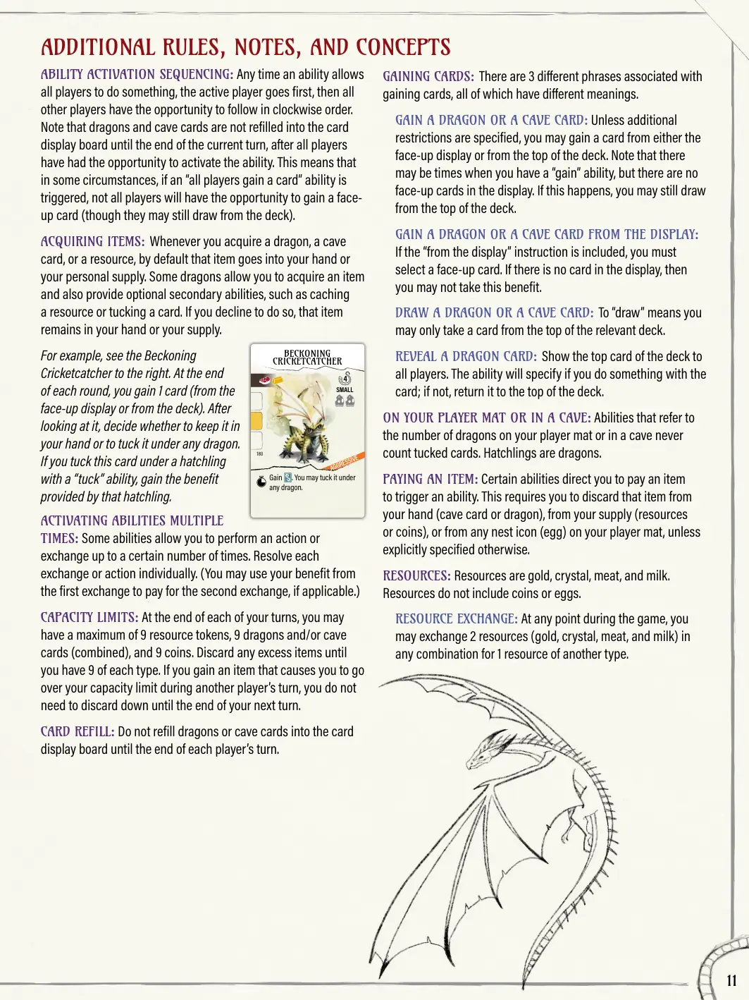
<figcaption>原版规则书 · 第 11 页（点击图片放大）</figcaption>
</figure>

<details class="mt-fold">
<summary>📝 第 11 页 AI 机翻对照（点击展开）</summary>
<div class="mt-body"><h2>额外规则、注释与概念</h2>

<p>能力激活顺序：当任何能力允许所有玩家执行某项操作时，当前玩家先行动，然后其他玩家按顺时针顺序依次有机会跟随。请注意，龙和洞穴卡牌直到当前回合结束后，在所有玩家都有机会激活能力之后，才会被重新放入卡牌展示板。这意味着在某些情况下，如果触发了"所有玩家获得一张卡牌"的能力，并非所有玩家都将有机会获得一张明牌（尽管他们仍然可以从牌库中摸牌）。</p>

<p>获取物品：每当您获得一条龙、一张洞穴卡牌或一种资源时，默认情况下该物品会进入您的手牌或您的个人储备。有些龙允许您获得物品，并提供可选的次要能力，例如缓存资源或收起卡牌。如果您选择不这样做，该物品将保留在您的手牌或储备中。</p>

<p>例如，请参阅右侧的召唤板球手。在每个回合结束时，您获得1张卡牌（来自明牌展示或从牌库中）。查看后，决定将其保留在手中还是收起到任何龙的下方。如果您将这张卡牌收起到具有"收起"能力的幼龙下方，则获得该幼龙提供的好处。</p>

<h2>多次激活能力：有些能力允许您执行某项操作或交换最多一定次数。分别解决每次交换或行动。（如果适用，您可以使用第一次交换获得的好处来支付第二次交换的费用。）</h2>

<p>容量限制：在您的每个回合结束时，您最多可以拥有9个资源指示物、9条龙和/或洞穴卡牌（合计），以及9枚金币。丢弃多余的物品，直到每种类型都有9个。如果您在另一个玩家的回合期间获得导致您超过容量限制的物品，您不需要在您的下一个回合结束前丢弃至限额。</p>

<p>卡牌补充：直到每个玩家的回合结束时，才将龙和洞穴卡牌补充到卡牌展示板中。</p>

<p>获得卡牌：有3个与获得卡牌相关的不同短语，它们都有不同的含义。</p>

<p>获得一条龙或一张洞穴卡牌：除非有额外限制，否则您可以从明牌展示或从牌库顶部获得一张卡牌。请注意，有时您可能拥有"获得"能力，但展示板中没有明牌。如果发生这种情况，您仍然可以从牌库顶部摸牌。</p>

<h2>从展示中获得一条龙或一张洞穴卡牌：如果包含"从展示中"的说明，您必须选择一张明牌。如果展示板中没有卡牌，则您不能获得此好处。</h2>

<p>摸一条龙或一张洞穴卡牌："摸牌"意味着您</p>

<p>只能从相关牌库的顶部拿取一张牌。</p>

<p>展示一张龙牌：向所有玩家展示牌库顶部的牌。能力会说明你是否对这张牌做些什么；如果没有，将其放回牌库顶部。</p>

<p>在你的玩家版图或洞穴中：指代你玩家版图上或洞穴中的龙数量的能力从不计算被收起的牌。幼龙也是龙。</p>

<p>支付物品：某些能力指示你支付一个物品来触发能力。这要求你从你的手牌（洞穴牌或龙）、你的供给（资源或金币）或你玩家版图上的任何巢穴图标（蛋）中弃掉该物品，除非另有明确说明。</p>

<p>资源：资源是金币、水晶、肉和牛奶。资源不包括金币或蛋。</p>

<p>资源交换：在游戏期间的任何时候，你可以将任意组合的2个资源（金币、水晶、肉和牛奶）交换为1个其他类型的资源。</p>

<h2>侵略性</h2>

<h2>召唤</h2>

<h2>捕虫者</h2>

<h2>小型</h2>

<p>获得</p>

<p>。你可以将其收起在任何龙的下面。</p></div>
</details>

<figure>
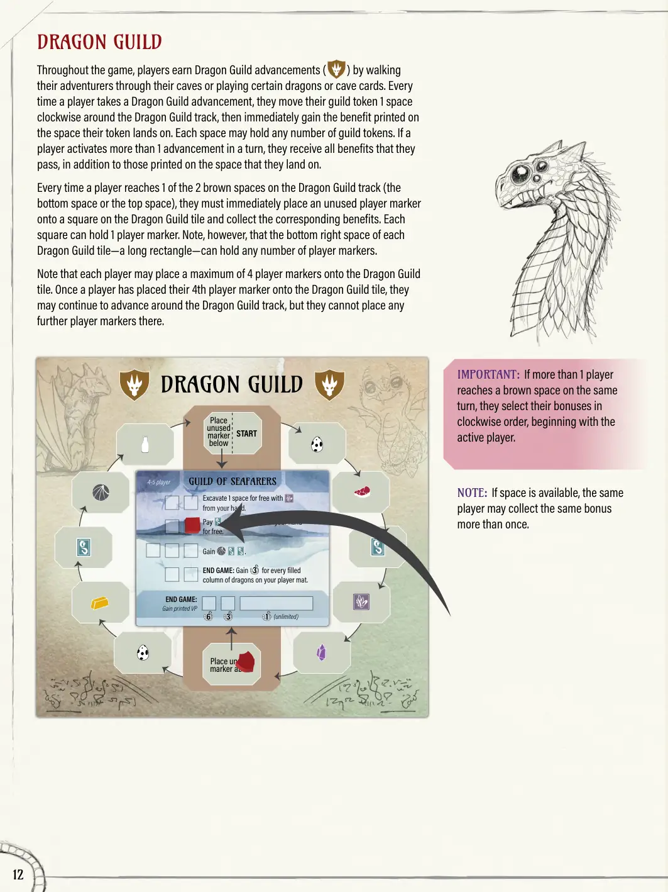
<figcaption>原版规则书 · 第 12 页（点击图片放大）</figcaption>
</figure>

<details class="mt-fold">
<summary>📝 第 12 页 AI 机翻对照（点击展开）</summary>
<div class="mt-body"><h2>龙行会</h2>

<p>在整个游戏中，玩家通过让他们的冒险者穿过洞穴或打出特定的龙牌或洞穴牌来获得龙行会进阶（）。每当玩家获得一个龙行会进阶时，他们将他们的行会指示物在龙行会轨道上顺时针移动1格，然后立即获得其指示物所在格子上的奖励。每个格子可以容纳任意数量的行会指示物。如果玩家在一个回合内激活超过1个进阶，他们会获得经过的所有格子的奖励，以及他们最终停留格子上的奖励。</p>

<p>每当玩家到达龙行会轨道上的2个棕色格子之一（最下面的格子或最上面的格子）时，他们必须立即将一个未使用的玩家标记放置到龙行会板块上的一个方格中，并收集相应的奖励。每个方格可以容纳1个玩家标记。但是请注意，每个龙行会板块的右下角格子——一个长方形——可以容纳任意数量的玩家标记。</p>

<p>请注意，每个玩家最多可以在龙行会板块上放置4个玩家标记。一旦玩家将他们的第4个玩家标记放置到龙行会板块上，他们可以继续在龙行会轨道上前进，但不能再在那里放置任何更多的玩家标记。</p>

<p>重要提示：如果超过1名玩家在同一回合到达一个棕色格子，他们按顺时针顺序选择奖励，从当前玩家开始。</p>

<p>注意：如果有空间可用，同一玩家可以多次获得相同的奖励。</p>

<h2>龙行会</h2>

<h2>开始</h2>

<p>将未使用的</p>

<p>标记放置在下方</p>

<p>将未使用的</p>

<p>标记放置在上方</p>

<p>将龙行会板块放置在这里，正确的玩家数量面朝上。</p>

<h2>海行者行会</h2>

<p>从手牌中免费挖掘1个格子。</p>

<p>支付，然后从手牌中免费打出。</p>

<p>获得。</p>

<p>游戏结束：根据玩家版图上每列填满的龙获得3。</p>

<p>游戏结束：获得印刷的VP</p>

<p>1（无限制）</p>

<p>4-5玩家</p></div>
</details>

<figure>
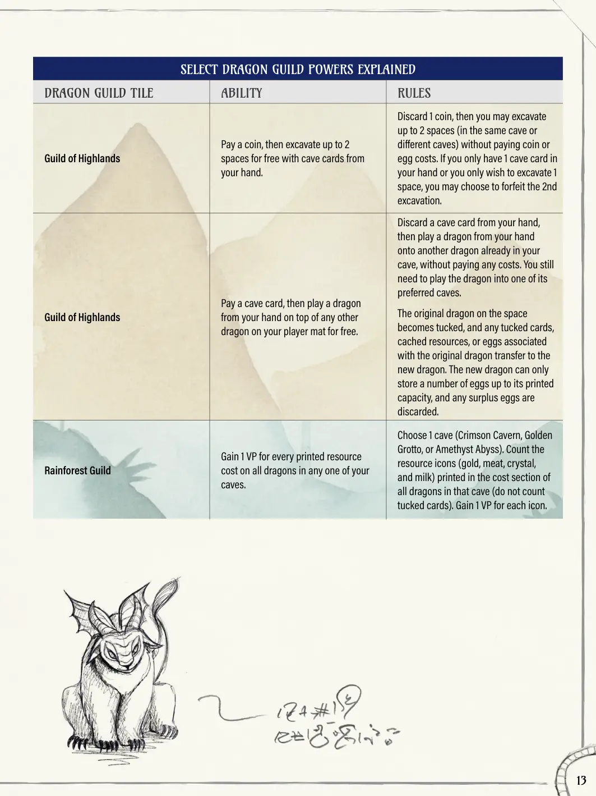
<figcaption>原版规则书 · 第 13 页（点击图片放大）</figcaption>
</figure>

<details class="mt-fold">
<summary>📝 第 13 页 AI 机翻对照（点击展开）</summary>
<div class="mt-body"><h2>龙行会能力详解</h2>

<h2>龙行会板块</h2>

<h2>能力</h2>

<h2>规则</h2>

<p>高地行会</p>

<p>支付1枚金币，然后从你的手牌中使用洞穴卡免费挖掘最多2个空间。</p>

<p>弃置1枚金币，然后你可以免费挖掘最多2个空间（在同一洞穴或不同洞穴），无需支付金币或蛋的成本。如果你手牌中只有1张洞穴卡，或者你只想挖掘1个空间，你可以选择放弃第2次挖掘。</p>

<p>高地行会</p>

<p>支付1张洞穴卡，然后从你的手牌中将一条龙免费放置在你的玩家版图上任何其他龙的顶部。</p>

<p>从你的手牌中弃置1张洞穴卡，然后将你手牌中的一条龙放置到你洞穴中已有的另一条龙上，无需支付任何成本。你仍然需要将龙放入其偏好的洞穴之一。</p>

<p>原始空间上的龙会被折叠，与原始龙相关的任何折叠卡、缓存资源或蛋会转移到新龙上。新龙只能存储不超过其印刷数量的蛋，任何多余的蛋将被弃置。</p>

<p>雨林行会</p>

<p>在你任意一个洞穴中的所有龙的印刷资源成本上，每获得1个印刷资源成本就获得1VP。</p>

<p>选择1个洞穴（ Crimson Cavern（深红洞穴）、Golden Grotto（金色洞穴）或Amethyst Abyss（紫晶深渊））。计算该洞穴中所有龙的成本部分印刷的资源图标（黄金、肉类、水晶和牛奶）（不计算折叠卡）。每个图标获得1VP。</p></div>
</details>

<figure>
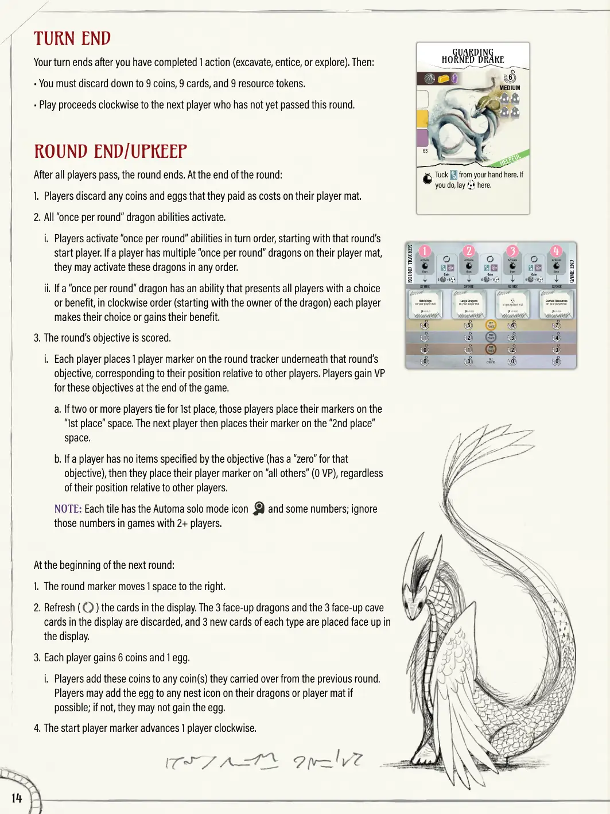
<figcaption>原版规则书 · 第 14 页（点击图片放大）</figcaption>
</figure>

<details class="mt-fold">
<summary>📝 第 14 页 AI 机翻对照（点击展开）</summary>
<div class="mt-body"><h2>回合结束</h2>

<p>在你完成1个行动（挖掘、引诱或探索）后，你的回合结束。然后：</p>

<p>• 你必须将硬币、卡牌和资源指示物弃至9张。</p>

<p>• 游戏按顺时针方向进行到下一个尚未在本轮弃权的玩家。</p>

<h2>回合结束/维护阶段</h2>

<p>在所有玩家弃权后，回合结束。在回合结束时：</p>

<ol>
  <li>玩家弃置他们在玩家版图上作为成本支付的任何硬币和龙蛋。</li>
  <li>所有"每回合一次"的龙能力激活。</li>
</ol>

<p>i.	 玩家按回合顺序激活"每回合一次"的能力，从该回合的起始玩家开始。如果玩家在他们的玩家版图上有多个"每回合一次"的龙，他们可以按任意顺序激活这些龙。</p>

<p>ii.	 如果"每回合一次"的龙有一种能力向所有玩家提供选择或福利，按顺时针顺序（从龙的拥有者开始）每个玩家做出他们的选择或获得他们的福利。</p>

<ol>
  <li>回合的目标被计分。</li>
</ol>

<p>i.	 每个玩家在回合追踪器上放置1个玩家标记，放在该回合目标的下方，对应他们相对于其他玩家的位置。玩家在游戏结束时获得这些目标的VP。</p>

<p>a.	 如果两个或更多玩家并列第一名，这些玩家将他们的标记放在"第一名"格上。然后下一个玩家将他们的标记放在"第二名"格上。</p>

<p>b.	 如果玩家没有目标指定的物品（在该目标上有一个"零"），那么无论他们相对于其他玩家的位置如何，他们都将他们的玩家标记放在"其他所有"（0 VP）上。</p>

<p>注意：每个板块都有单人模式图标和一些数字；在2人及以上的游戏中忽略这些数字。</p>

<p>在下一回合开始时：</p>

<ol>
  <li>回合标记向右移动1格。</li>
  <li>刷新（</li>
</ol>

<p>）展示区的卡牌。展示区中的3张正面朝上的龙卡和3张正面朝上的洞穴卡被弃置，然后每种类型各放置3张新卡牌正面朝上展示。</p>

<ol>
  <li>每个玩家获得6个硬币和1个龙蛋。</li>
</ol>

<p>i.	 玩家将这些硬币添加到他们从上一轮 carry over 的任何硬币上。如果可能，玩家可以将龙蛋添加到他们龙或玩家版图上的任何巢穴图标上；如果不可能，他们不能获得龙蛋。</p>

<ol>
  <li>起始玩家标记按顺时针方向前进1个玩家。</li>
</ol>

<h2>有帮助的</h2>

<h2>守护的</h2>

<h2>有角的龙</h2>

<p>将你手牌中的</p>

<p>收起到这里。如果你这样做，放置</p>

<p>在这里。</p>

<h2>中等</h2>

<h2>回合追踪器</h2>

<h2>游戏结束</h2>

<h2>计分</h2>

<h2>计分</h2>

<p>激活</p>

<p>然后</p>

<p>激活</p>

<p>然后</p>

<p>激活</p>

<p>然后</p>

<h2>计分</h2>

<h2>计分</h2>

<p>激活</p>

<p>然后</p>

<p>获得</p>

<p>+ 1</p>

<p>获得</p>

<p>+ 1</p>

<p>获得</p>

<p>+ 1</p>

<p>第一名</p>

<h2>位置</h2>

<p>第二名</p>

<h2>位置</h2>

<p>第三名</p>

<h2>位置</h2>

<h2>所有</h2>

<h2>其他</h2>

<p>你玩家版图上的幼龙</p>

<p>0/0/1/2</p>

<p>你玩家版图上的大型龙</p>

<p>0/1/2/3</p>

<p>你玩家版图上的</p>

<p>1/2/5/10</p>

<p>你玩家版图上缓存资源</p>

<p>0/1/3/5</p></div>
</details>

<figure>
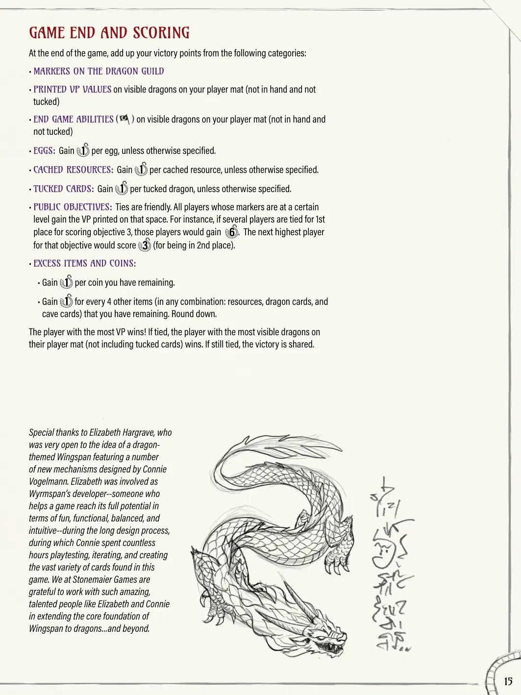
<figcaption>原版规则书 · 第 15 页（点击图片放大）</figcaption>
</figure>

<details class="mt-fold">
<summary>📝 第 15 页 AI 机翻对照（点击展开）</summary>
<div class="mt-body"><h2>游戏结束与计分</h2>

<p>游戏结束时，从以下类别中计算你的胜利点：</p>

<h2>• 龙行会上的指示物</h2>

<p>• 玩家版图上可见的龙牌上印刷的VP值（不在手牌中且未收起）</p>

<h2>• 游戏结束能力 (</h2>

<p>) 玩家版图上可见的龙牌上的游戏结束能力（不在手牌中且未收起）</p>

<p>• 龙蛋：每获得1个龙蛋得1分，除非另有说明。</p>

<p>• 缓存资源：每缓存1个资源得1分，除非另有说明。</p>

<p>• 收起的卡牌：每收起1张龙牌得1分，除非另有说明。</p>

<p>• 公共目标：平局是友好的。所有在某个级别上有指示物的玩家都能获得该空间上印刷的VP。例如，如果有多个玩家在目标3的计分中并列第一，这些玩家将获得 6 分。该目标的下一个最高分玩家将获得3分（因为排名第二）。</p>

<h2>• 多余的物品和金币：</h2>

<p>• 每剩余1枚金币获得1分。</p>

<p>• 每4个其他物品（任意组合：资源、龙牌和洞穴牌）获得1分。向下取整。</p>

<p>拥有最多VP的玩家获胜！如果平局，则玩家版图上可见龙牌最多的玩家获胜（不包括收起的牌）。如果仍然平局，则共享胜利。</p>

<p>特别感谢Elizabeth Hargrave，她非常支持制作一个龙主题的Wingspan的想法，其中包含由Connie Vogelmann设计的许多新机制。在漫长的设计过程中，Elizabeth担任Wyrmspan的开发者——帮助游戏在趣味性、功能性、平衡性和直观性方面发挥其全部潜力——Connie则花费了无数小时进行测试迭代，并创造了游戏中种类繁多的卡牌。我们在Stonemaier Games很荣幸能与Elizabeth和Connie这样才华横溢的杰出人才合作，共同将Wingspan的核心基础扩展到龙……乃至更远。</p></div>
</details>

<figure>
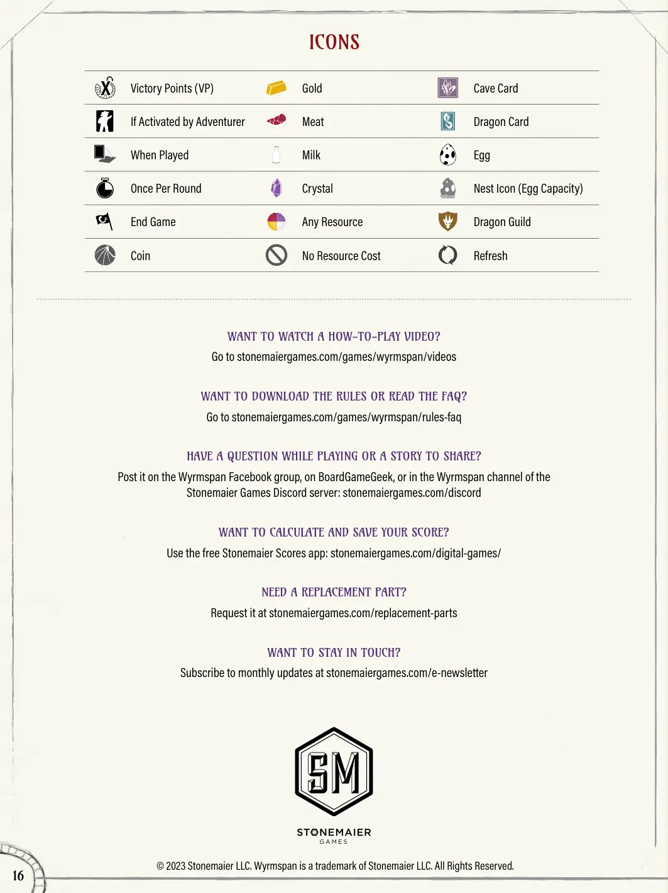
<figcaption>原版规则书 · 第 16 页（点击图片放大）</figcaption>
</figure>

<details class="mt-fold">
<summary>📝 第 16 页 AI 机翻对照（点击展开）</summary>
<div class="mt-body"><p>X</p>

<p>胜利点（VP）</p>

<p>如果被冒险者激活</p>

<p>打出时</p>

<p>每轮一次</p>

<p>游戏结束</p>

<p>金币</p>

<p>黄金</p>

<p>肉</p>

<p>牛奶</p>

<p>水晶</p>

<p>任意资源</p>

<p>无资源成本</p>

<p>洞穴卡牌</p>

<p>龙卡牌</p>

<p>龙蛋</p>

<p>巢穴图标（龙蛋容量）</p>

<p>龙行会</p>

<p>刷新</p>

<p>想要观看游戏教学视频？</p>

<p>访问 stonemaiergames.com/games/wyrmspan/videos</p>

<p>想要下载规则或阅读常见问题解答？</p>

<p>访问 stonemaiergames.com/games/wyrmspan/rules-faq</p>

<p>游戏中有问题要问或有故事要分享？</p>

<p>请在 Wyrmspan Facebook 群组、BoardGameGeek 或 Stonemaier Games Discord 服务器的 Wyrmspan 频道发布：stonemaiergames.com/discord</p>

<p>想要计算并保存你的分数？</p>

<p>使用免费的 Stonemaier Scores 应用：stonemaiergames.com/digital-games/</p>

<p>需要替换零件？</p>

<p>请在 stonemaiergames.com/replacement-parts 请求</p>

<p>想要保持联系？</p>

<p>订阅月度更新，访问 stonemaiergames.com/e-newsletter</p>

<h2>图标</h2>

<p>© 2023 Stonemaier LLC. Wyrmspan 是 Stonemaier LLC 的商标。保留所有权利。</p></div>
</details>
        </div>

        <footer class="source-note">
<p>来源：<a href="https://www.dropbox.com/scl/fo/ulyfze69rb24tsgip7mn7/h?rlkey=ha4lz6kvkwmjaglah0lwtzjto&amp;dl=0" target="_blank" rel="noopener">Stonemaier Games 官方（Dropbox 文件夹）</a>（2024 h?rlkey=ha4lz6kvkwmjaglah0lwtzjto&dl=0）· 译文仅供个人学习查阅，规则内容归 Stonemaier Games 及版权方所有 · 原文版權與商标归原出版方。</p>
</footer>
      </article>
    </main>
  </div>

  <button class="to-top" aria-label="返回顶部" data-i18n-aria="backTop">↑</button>
  <script src="../assets/js/i18n.js"></script>
  <script src="../assets/js/main.js"></script>
</body>
</html>
